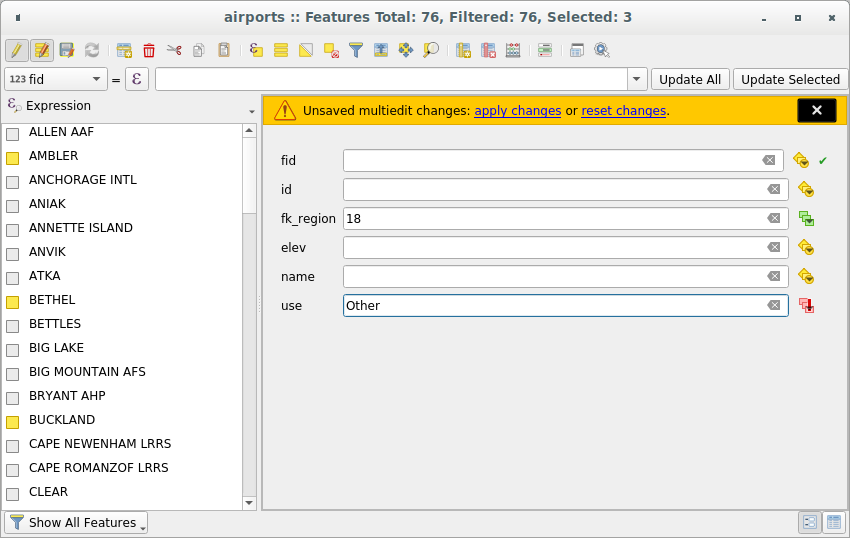

16.2. အချက်အလက်ပြဇယား နှင့် အလုပ်လုပ်ခြင်း (Working with the Attribute Table)
Attribute (အချက်အလက်ပြ) ဇယား သည် ရွေးချယ်ထားသော Layer (အလွှာ)တစ်ခု၏ feature များဆိုင်ရာ အချက်အလက်များကို ပြသသည်။ ဇယားရှိ row တစ်ခုစီသည် feature တစ်ခု (ဂျီသြမေတြီနှင့် သို့မဟုတ် ဂျီသြမေတြီမပါဘဲ) ကိုကိုယ်စားပြုပြီး column တစ်ခုစီတွင် feature နှင့်ပတ်သက်သည့် အချက်အလက်အပိုင်းအစတစ်ခုစီပါရှိသည်။ ဇယားရှိ feature များကို ရှာဖွေခြင်း၊ ရွေးချယ်ခြင်း၊ ရွှေ့ခြင်း သို့မဟုတ် ပြုပြင်ခြင်းတို့ကို ပြုလုပ်နိုင်သည်။
16.2.1. စကားချီး- (Foreword: Spatial and non-spatial tables)
QGIS သည် spatial နှင့် non-spatial layer များကို ထည့်သွင်းနိုင်သည်။ ၄င်းတွင် လက်ရှိ GDAL က ထောက်ပံ့ပေးထားသည့် ဇယားများနှင့် PostgreSQL၊ MS SQL Server၊ SpatiaLite နှင့် Oracle providers (ထောက်ပံ့ပေးသူများ) အပြင် delimited text များ ပါဝင်ပါသည်။ ထည့်သွင်းထားသည့် layer များကို Layers (အလွှာများ) panel (ဘောင်ကွက်) တွင် စာရင်းပြုလုပ်ထားပါသည်။ Layer တစ်ခုသည် တည်နေရာနှင့်သက်ဆိုင်ခြင်း ရှိ/မရှိသည် မြေပုံပေါ်တွင် ၄င်းနှင့် အပြန်အလှန်လုပ်ဆောင်ခြင်း ရှိ/မရှိကို ဆုံးဖြတ်ပေးသည်။
Attribute ဇယား မြင်ကွင်း (view) ကို အသုံးပြု၍ non-spatial ဇယားများကို ရှာဖွေပြီး ပြုပြင်နိုင်သည်။ ထို့အပြင် ၄င်းတို့ကို field ရှာဖွေမှုများတွင် အသုံးပြုနိုင်သည်။ ဥပမာအားဖြင့်- attribute တန်ဖိုးများကို သတ်မှတ်ရန် non-spatial ဇယား၏ column များကို အသုံးပြုနိုင်သည် သို့မဟုတ် digitize (မြေပုံအချက်အလက်များ ရေးဆွဲခြင်း) လုပ်နေချိန်တွင် သတ်မှတ်ထားသည့် vector layer တစ်ခုသို့ ထည့်သွင်းထားသော တန်ဖိုးအပိုင်းအခြား တစ်ခုကို အသုံးပြုနိုင်သည်။ ပိုမိုသိရှိရန် Attribute ဖောင်၏ဂုဏ်သတ္တိများ (Attributes Form Properties) အခန်းတွင် edit (ပြုပြင်မွမ်းမံ) နိုင်သည့် widget (အထားအသိုပုံစံ) ကို ကြည့်ရှုပါ။
16.2.2. အချက်အလက်ဇယားအကြောင်း မိတ်ဆက်ခြင်း (Introducing the attribute table interface)
Vector layer တစ်ခုအတွက် အချက်အလက်ဇယား ဖွင့်ရန်၊ Layer များဖော်ပြသည့် panel (Layers Panel) ထဲတွင်ရှိသော layer ကို နှိပ်လိုက်ပြီးနောက် အဓိက menu မှ  (အချက်အလက်ဇယားဖွင့်ခြင်း) ခလုတ်ပေါ်တွင် နှိပ်၍လည်း ဖွင့်နိုင်ပါသည်။ Shortcut (အမြန်နည်းလမ်း) များအသုံးပြုလိုပါက ကီးဘုတ်ရှိ F6 ကို အသုံးပြုပြီး အချက်အလက်ဇယားကို ဖွင့်နိုင်ပါမည်။ Shift+F6 ကို အသုံးပြုပါက ရွေးချယ်ထားသည့် feature များကို စစ်ထုတ်ထား (filter) သော အချယ်အလက်ဇယား ပွင့်လာမည်ဖြစ်ပြီး Ctrl+F6 ကို အသုံးပြုပါက မြင်ရနိုင်သော feature များကို စစ်ထုတ်ထား (filter) သော အချက်အလက်ဇယား ပွင့်လာမည်ဖြစ်သည်။
(အချက်အလက်ဇယားဖွင့်ခြင်း) ခလုတ်ပေါ်တွင် နှိပ်၍လည်း ဖွင့်နိုင်ပါသည်။ Shortcut (အမြန်နည်းလမ်း) များအသုံးပြုလိုပါက ကီးဘုတ်ရှိ F6 ကို အသုံးပြုပြီး အချက်အလက်ဇယားကို ဖွင့်နိုင်ပါမည်။ Shift+F6 ကို အသုံးပြုပါက ရွေးချယ်ထားသည့် feature များကို စစ်ထုတ်ထား (filter) သော အချယ်အလက်ဇယား ပွင့်လာမည်ဖြစ်ပြီး Ctrl+F6 ကို အသုံးပြုပါက မြင်ရနိုင်သော feature များကို စစ်ထုတ်ထား (filter) သော အချက်အလက်ဇယား ပွင့်လာမည်ဖြစ်သည်။
အဆိုပါနည်းလမ်းများအတိုင်းဆောင်ရွက်လျှင် layer အတွက် feature အချက်အလက်များကို ဖော်ပြသော window အသစ်တစ်ခု ပွင့်လာမည်ဖြစ်သည် (figure_attributes_table)။ menu တွင်ရှိသော setting အရ အချက်အလက်ဇယားသည် ချိတ်ဆက်ထားသည့် (docked) window တစ်ခု သို့မဟုတ် ပုံမှန် (regular) window တစ်ခုထဲတွင် ပွင့်လာမည်ဖြစ်သည်။ Layer အတွင်းရှိ စုစုပေါင်း feature အရေအတွက်နှင့် လက်ရှိ ရွေးချယ်ထားသော/စစ်ထုတ်ထားသော feature အရေအတွက်သည် layer ကို တည်နေရာအရကန့်သတ်ထားလျှင်လည်း အချက်အလက်ဇယားခေါင်းစဉ်ထဲတွင် ပြသပေးမည်ဖြစ်သည်။
Fig. 16.69 ဒေသများ (Regions) layer အတွက် အချက်အလက်ဇယား
အချက်အလက်ဇယား window ၏ ထိပ်ဆုံးတွင်ရှိသည့် ခလုတ်များသည် အောက်ပါလုပ်ဆောင်ချက်များကို လုပ်ဆောင်နိုင်ပါသည်-
Icon |
Label (အညွှန်း) |
Purpose (ရည်ရွယ်ချက်) |
Default Shortcut |
|---|---|---|---|
|
Toggle editing mode (ပြင်ဆင်ခြင်း mode အဖွင့်အပိတ်) |
လုပ်ဆောင်ချက်များကို ပြင်ဆင်ရန် ဆောင်ရွက်ခြင်း |
Ctrl+E |
|
Toggle multi edit mode (အများအပြားပြင်ဆင်ခြင်း mode အဖွင့်အပိတ်) |
Feature များ၏ field အများအပြားကို ပြင်ဆင်ခြင်း |
|
|
Save Edits (ပြင်ဆင်ခြင်းများကိုသိမ်းဆည်းခြင်း) |
လက်ရှိပြုပြင်မွမ်းမံခြင်းများကို သိမ်းဆည်းခြင်း |
|
|
Reload the table (ဇယားကို refresh လုပ်ခြင်း) |
||
|
Add feature (feature ထည့်သွင်းခြင်း) |
ဂျီဩမေတြီဆိုင်ရာအချက်အလက်များမပါဝင်သော feature အသစ်ထည့်သွင်းခြင်း |
|
|
Delete selected features (ရွေးချယ်ထားသည့် feature ကို ဖျက်ခြင်း) |
Layer မှ ရွေးချယ်ထားသော feature များကို ဖယ်ရှားခြင်း |
|
|
Cut selected features to clipboard (ရွေးချယ်ထားသည့် feature များကို clipboard သို့ ရွေ့ခြင်း) |
Ctrl+X |
|
|
Copy selected features to clipboard (ရွေးချယ်ထားသည့် feature များကို clipboard သို့ ကော်ပီကူးခြင်း) |
Ctrl+C |
|
Paste features from clipboard (Clipboard မှ Paste လုပ်ခြင်း) |
ကူးထားသည်များမှ feature အသစ်များကို ထည့်သွင်းခြင်း |
Ctrl+V |
|
|
Select features using an Expression (ခိုင်းစေချက်တစ်ခုကို အသုံးပြုပြီး feature များကိုရွေးချယ်ခြင်း |
||
|
Select All (အားလုံးကိုရွေးချယ်ခြင်း) |
Layer အတွင်းရှိ feature အားလုံးကို ရွေးချယ်ခြင်း |
Ctrl+A |
|
Invert selection (ပြောင်းပြန်ရွေးချယ်ခြင်း) |
Layer အတွင်း လက်ရှိရွေးချယ်ထားမှုများကို ပြောင်းပြန်ပြုလုပ်ခြင်း |
Ctrl+R |
|
Deselect all (အားလုံးကိုရွေးချယ်ထားခြင်းမှပယ်ဖျက်ခြင်း) |
လက်ရှိ layer အတွင်းရှိ feature အားလုံးကို ရွေးချယ်ထားခြင်းမှ ပယ်ဖျက်ခြင်း |
Ctrl+Shift+A |
|
Filter/Select features using form (ပုံစံ (form) ကို အသုံးပြုပြီး feature များကို ရွေးချယ်ခြင်း/စစ်ထုတ်ခြင်း) |
Ctrl+F |
|
|
Move selected to top (ရွေးချယ်ထားသည်ကို ထိပ်ဆုံးသို့ ရွေ့ခြင်း) |
ရွေးချယ်ထားသည့် အတန်း(row) များကို ဇယား၏ထိပ်ဆုံးသို့ ရွေ့ခြင်း |
|
|
Pan map to the selected rows (ရွေးချယ်ထားသည့် row များဆီသို့ မြေပုံကိုရွေ့ခြင်း) |
Ctrl+P |
|
|
Zoom map to the selected rows (ရွေးချယ်ထားသည့် row များဆီသို့ မြေပုံကို မြင်ကွင်းချဲ့ခြင်း |
Ctrl+J |
|
|
New field (Field အသစ်) |
ဒေတာအရင်းမြစ်ထဲသို့ field အသစ်တစ်ခု ထည့်သွင်းခြင်း |
Ctrl+W |
|
Delete field (Field ကို ဖျက်ခြင်း) |
ဒေတာအရင်းမြစ်မှ field တစ်ခုကို ဖယ်ရှားခြင်း |
|
|
Organize columns (ကော်လံများ (column)ကို စုစည်းခြင်း) |
အချက်အလက်ဇယား မှ field များကို ပြသခြင်း/ဖျောက်ထားခြင်း |
|
|
Open field calculator (Field calculator ဖွင့်ခြင်း) |
Row တစ်ခုထဲရှိ feature များအတွက် field ကို ပြုပြင်မွမ်းမံခြင်း |
Ctrl+I |
|
Conditional formatting (အခြေအနေအရဖြစ်သော format ပြင်ဆင်ခြင်း) |
ဇယား format ပြင်ဆင်ခြင်းကို လုပ်ဆောင်စေခြင်း |
|
|
Dock attribute table (အချက်အလက်ဇယား ချိတ်တွဲခြင်း) |
အချက်အလက်ဇယားကို ချိတ်တွဲရန်/ဖြုတ်ရန် ခွင့်ပြုခြင်း |
|
|
Actions (လုပ်ဆောင်ချက်များ) |
Layer နှင့်ဆက်စပ်နေသည့် လုပ်ဆောင်ချက်များကို စာရင်းပြုစုခြင်း |


{kind=link}
Note
ဒေတာ၏ ပုံစံ (format) နှင့် QGIS ဗားရှင်းတွင်ပါဝင်သော GDAL library အပေါ်မူတည်၍ အချို့ tool များသည် အသုံးပြု၍ ရနိုင်မည်မဟုတ်ပါ။
ဤခလုတ်များ၏အောက်တွင် Quick Field Calculation bar ရှိပါသည် (edit mode တွင်သာ လုပ်ဆောင်မည်ဖြစ်သည်)။ ၎င်းသည် layer ထဲရှိ feature များအားလုံး သို့မဟုတ် feature အစိတ်အပိုင်းများ တွက်ချက်ခြင်းကို လျှင်မြန်စွာအသုံးချနိုင်ရန် ခွင့်ပြုပေးမည်ဖြစ်သည်။ ထို bar သည်  Field Calculator ကဲ့သို့ တူညီသည့် expressions ကို အသုံးပြုပါသည် (အချက်အလက်တန်ဖိုးများကို တည်းဖြတ်ပြင်ဆင်ခြင်း (Editing attribute values) တွင် ကြည့်ရှုပါ)။
Field Calculator ကဲ့သို့ တူညီသည့် expressions ကို အသုံးပြုပါသည် (အချက်အလက်တန်ဖိုးများကို တည်းဖြတ်ပြင်ဆင်ခြင်း (Editing attribute values) တွင် ကြည့်ရှုပါ)။
16.2.2.1. Table ပုံစံ နှင့် Form ပုံစံမြင်ကွင်း (Table view vs Form view)
QGIS တွင် attribute ဇယားအတွင်းရှိ ဒေတာများကို လွယ်ကူစွာကိုင်တွယ်နိုင်ရန် မြင်ကွင်းပုံစံနှစ်ခု ထောက်ပံ့ပေးထားပါသည်-
- Table view သည် Table ပုံစံမြင်ကွင်းတွင် feature အများအပြား၏ တန်ဖိုးများကို ဇယားပုံစံတစ်ခုထဲတွင် ဖော်ပြမည် ဖြစ်ပါသည်။ အတန်း (row) အသီးသီးသည် feature တစ်ခုကို ကိုယ်စားပြုပြီး၊ တိုင် (column) အသီးသီးသည် field တစ်ခုကို ကိုယ်စားပြုပါသည်။ Column ၏ခေါင်းစီးပေါ်တွင် right-click နှိပ်ခြင်းဖြင့် ():ref:configure the table display <configure_table_columns>) ဇယားပြသခြင်းကို ပြင်ဆင်သတ်မှတ်ရန် ခွင့်ပြုမည်ဖြစ်ပြီး၊ ဆဲလ် (cell) တစ်ခုပေါ်တွင် right-click နှိပ်ခြင်းဖြင့် (interaction with the feature) feature နှင့် အပြန်အလှန်ဆောင်ရွက်ခြင်းကို ထောက်ပံ့ပေးမည်ဖြစ်သည်။
Attribute ဇယားတွင် table မြင်ကွင်းပုံစံထဲရှိ ဒေါင်လိုက်နှင့် အလျားလိုက် scroll (mouse ၏ဘီးလုံးကို လှိမ့်ခြင်း) ပြုလုပ်သည့်ရွေ့လျားမှုများကို ပြောင်းလဲရန် Shift+Mouse Wheel scroll ပြုလုပ်ခြင်းကို ခွင့်ပြုထားပါသည်။ ထိုသို့လုပ်ဆောင်ခြင်းကို MacOS ပေါ်ရှိ trackpad ကို mouse အစား အသုံးပြုနိုင်ပါသည်။
 Form view Form ပုံစံမြင်ကွင်းသည် ပထမ panel တစ်ခုထဲတွင် feature identifiers ကို ပြသမည်ဖြစ်ပြီး၊ ဒုတိယတစ်ခုထဲတွင် ကလစ်နှိပ်ထားသည့် identifier ၏ attribute များကိုသာ ဖော်ပြပေးမည်ဖြစ်သည်။ ပထမ panel ၏ ထိပ်ပိုင်းတွင် pull-down (အောက်သို့ဆွဲချသည့်) menu တစ်ခုရှိပါသည်။ ထိုနေရာတွင် identifier ကို attribute တစ်ခု (Column preview) သို့မဟုတ် Expression တစ်ခုကို အသုံးပြုပြီး သတ်မှတ်နိုင်ပါသည်။ ပြန်လည်အသုံးပြုရန်အတွက် pull-down တွင်နောက်ဆုံးအသုံးပြုခဲ့သော expression ၁၀ ခုလည်း ပါဝင်ပါသည်။ Form ပုံစံမြင်ကွင်းကို layer field များ ပြင်ဆင်သတ်မှတ်ရာတွင် အသုံးပြုပါသည်။ (Attribute ဖောင်၏ဂုဏ်သတ္တိများ (Attributes Form Properties) တွင်ကြည့်ရှုပါ။)
Form view Form ပုံစံမြင်ကွင်းသည် ပထမ panel တစ်ခုထဲတွင် feature identifiers ကို ပြသမည်ဖြစ်ပြီး၊ ဒုတိယတစ်ခုထဲတွင် ကလစ်နှိပ်ထားသည့် identifier ၏ attribute များကိုသာ ဖော်ပြပေးမည်ဖြစ်သည်။ ပထမ panel ၏ ထိပ်ပိုင်းတွင် pull-down (အောက်သို့ဆွဲချသည့်) menu တစ်ခုရှိပါသည်။ ထိုနေရာတွင် identifier ကို attribute တစ်ခု (Column preview) သို့မဟုတ် Expression တစ်ခုကို အသုံးပြုပြီး သတ်မှတ်နိုင်ပါသည်။ ပြန်လည်အသုံးပြုရန်အတွက် pull-down တွင်နောက်ဆုံးအသုံးပြုခဲ့သော expression ၁၀ ခုလည်း ပါဝင်ပါသည်။ Form ပုံစံမြင်ကွင်းကို layer field များ ပြင်ဆင်သတ်မှတ်ရာတွင် အသုံးပြုပါသည်။ (Attribute ဖောင်၏ဂုဏ်သတ္တိများ (Attributes Form Properties) တွင်ကြည့်ရှုပါ။)ပထမ panel ၏ အောက်ခြေတွင်ရှိသော မြှားဖြင့် feature identifier များကို ကြည့်ရှုနိုင်ပါသည်။ မိမိ ဆောင်ရွက်သလို ဒုတိယ panel ထဲတွင် feature attribute များ အသစ်ပြုပြင်သွားမည် (update) ဖြစ်ပါသည်။ ၎င်းသည် အောက်ခြေတွင်ရှိသော ခလုတ်ကို ဆွဲချခြင်းဖြင့် မြေပုံ canvas ထဲရှိ active ဖြစ်သည့် feature ကို ခွဲခြားရန် သို့မဟုတ် ရွှေ့ရန် လုပ်ဆောင်နိုင်ပါသည်။
မြေပုံ canvas ထဲတွင် မြင်နိုင်လျှင်
 Highlight current feature (လက်ရှိ feature ကို ထင်ရှားအောင်ဖော်ပြခြင်း) ကိုအသုံးပြုနိုင်သည်။
Highlight current feature (လက်ရှိ feature ကို ထင်ရှားအောင်ဖော်ပြခြင်း) ကိုအသုံးပြုနိုင်သည်။ Automatically pan to current feature (လက်ရှိ feature သို့ အလိုအလျောက်ရောက်ရှိအောင် ရွှေ့ခြင်း)
Automatically pan to current feature (လက်ရှိ feature သို့ အလိုအလျောက်ရောက်ရှိအောင် ရွှေ့ခြင်း)Zoom to current feature (လက်ရှိ feature သို့ မြင်ကွင်း ချုံ့/ချဲ့ ပြုလုပ်ခြင်း)
{kind=link}
Dialog ၏ ညာဘက်အောက်ခြေတွင်ရှိသော သက်ဆိုင်သည့် icon ကို နှိပ်ခြင်းအားဖြင့် ပုံစံ (mode) တစ်ခုမှ အခြားတစ်ခုသို့ ပြောင်းလဲနိုင်သည်။
Attribute ဇယားပွင့်လာလျှင်အသုံးပြုမည့် Default view (မူရင်းအမြင်) mode ကိုလည်း menu ထဲတွင်သတ်မှတ်နိုင်ပါသည်။ ထိုအရာသည် ‘Remember last view (နောက်ဆုံးမြင်ကွင်းကိုမှတ်သားထားခြင်း)’၊ ‘Table view (ဇယားပုံစံမြင်ကွင်း)’ သို့မဟုတ် ‘Form view (Form ပုံစံမြင်ကွင်း)’ ဖြစ်နိုင်ပါသည်။

Fig. 16.70 ဇယားပုံစံမြင်ကွင်း (အပေါ်) နှင့် Form ပုံစံမြင်ကွင်း (အောက်) ဖြင့် attribute ဇယား
16.2.2.2. Column များကို ပြင်ဆင်သတ်မှတ်ခြင်း (Configuring the columns)
အောက်ပါတို့ကို ထိန်းချုပ်နိုင်သည့် ကိရိယာများ (tools) ကို အသုံးပြုနိုင်စေရန် Table ပုံစံမြင်ကွင်းတွင် column တစ်ခု၏ခေါင်းစီးတွင် right-click နှိပ်ပါ-
column(s) size (column ၏ အရွယ်အစား)
column(s) visibility and order (column ၏ မြင်ရနိုင်မှု နှင့် အစီအစဉ်)
sort order of the data (ဒေတာ၏ အစီအစဉ်ကို ခွဲထားခြင်း)
Column အကျယ်ပြန်လည်ပြင်ဆင်ခြင်း (Resizing columns widths)
Column များ၏ အကျယ်ကို column ခေါင်းစီးပေါ်တွင် right-click နှိပ်ပြီး သတ်မှတ်နိုင်ပြီး၊ အောက်ပါတို့မှ တစ်ခုခုကို ရွေးချယ်ပါ-
Set width… (အကျယ်ကို သတ်မှတ်ခြင်း) ဆန္ဒရှိသည့်တန်ဖိုးကို ထည့်သွင်းရန်။ Default အားဖြင့် လက်ရှိတန်ဖိုးကို widget ထဲတွင် ဖော်ပြနေမည် ဖြစ်သည်။
Set all column widths… (Column အားလုံး၏ အကျယ်ကို သတ်မှတ်ခြင်း) Column အားလုံး၏အကျယ်ကို တူညီသည့်တန်ဖိုးများ သတ်မှတ်ရန်။
Autosize (အရွယ်အစားကို အလိုအလျောက်ထားရှိခြင်း) Column ၏ အကျယ်ကို အကောင်းဆုံးကိုက်ညီသည့် အရွယ်အစားကို ပြန်လည်ပြင်ဆင်ရန်။
Autosize all columns (Column အားလုံး၏ အရွယ်အစားကို အလိုအလျောက်ထားရှိခြင်း)
Column တစ်ခု၏အရွယ်အစားကို ၎င်း၏ခေါင်းစီး ညာဘက်အနားသတ်ဘောင်ကို ဆွဲချဲ့ခြင်းဖြင့်လည်း ပြောင်းလဲနိုင်ပါသည်။ Column အရွယ်အစားအသစ်ကို layer အတွက် ထိန်းသိမ်းထားမည် ဖြစ်ပြီး attribute ဇယား ထပ်မံဖွင့်သောအခါ ၎င်းအတိုင်း ပြန်လည်အသုံးချပေးမည် ဖြစ်ပါသည်။
Data Source Settings ထဲတွင်  Autosize all columns by default when opening attribute table (Attribute ဇယားဖွင့်သောအခါ column များအားလုံးကို default အနေဖြင့် အရွယ်အစားအလိုအလျောက်ချိန်ညှိပေးခြင်း) ကိုရွေးချယ်နိုင်ပါသည်၊ QGIS ထဲတွင် attribute ဇယားများဖွင့်သည့်အချိန်တိုင်း default အနေဖြင့် “Column များအားလုံးကို အလိုအလျောက်အရွယ်အစားချိန်ညှိ” ပေးပါလိမ့်မည်။
Autosize all columns by default when opening attribute table (Attribute ဇယားဖွင့်သောအခါ column များအားလုံးကို default အနေဖြင့် အရွယ်အစားအလိုအလျောက်ချိန်ညှိပေးခြင်း) ကိုရွေးချယ်နိုင်ပါသည်၊ QGIS ထဲတွင် attribute ဇယားများဖွင့်သည့်အချိန်တိုင်း default အနေဖြင့် “Column များအားလုံးကို အလိုအလျောက်အရွယ်အစားချိန်ညှိ” ပေးပါလိမ့်မည်။
Column များကို ဖျောက်ခြင်းနှင့် စုစည်းခြင်း၊ Action များဖွင့်ခြင်း (Hiding and organizing columns and enabling actions)
Attribute ဇယား (“table view (ဇယားပုံစံမြင်ကွင်း)” တွင်)မှ Column ခေါင်းစီးတစ်ခုထဲတွင် right-click နှိပ်ခြင်းအားဖြင့် Hide column (Column ကို ဖျောက်ထားခြင်း) ကို ရွေးချယ်နိုင်ပါသည်။ ပိုမိုအဆင့်မြင့်သည့် ထိန်းချုပ်မှုများအတွက် dialog toolbar မှ  Organize columns… (Column များကို စုစည်းခြင်း…) ခလုတ်ကို နှိပ်ပါ သို့မဟုတ် Contextual menu (attribute table ၏ မူလ menu) ထဲရှိ Organize columns… (Column များကို စုစည်းခြင်း…) ကို ရွေးပါ။ Dialog အသစ်ထဲတွင် အောက်ပါတို့ကို ဆောင်ရွက်နိုင်သည်-
Organize columns… (Column များကို စုစည်းခြင်း…) ခလုတ်ကို နှိပ်ပါ သို့မဟုတ် Contextual menu (attribute table ၏ မူလ menu) ထဲရှိ Organize columns… (Column များကို စုစည်းခြင်း…) ကို ရွေးပါ။ Dialog အသစ်ထဲတွင် အောက်ပါတို့ကို ဆောင်ရွက်နိုင်သည်-
ဖော်ပြလိုသည့် သို့မဟုတ် ဖျောက်ထားလိုသည့် column များကို အမှန်ခြစ်ခြင်း/ဖြုတ်ခြင်း- ဖျောက်ထားသော column တစ်ခုသည် ၎င်းကို ပြန်လည် restore မလုပ်ခင်အချိန်ထိ attribute ဇယား dialog ၏ ဖြစ်စဉ်တိုင်းတွင် ကွယ်ပျောက်နေမည် ဖြစ်ပါသည်။ အောက်ပါတို့ကိုလည်း လုပ်ဆောင်နိုင်ပါသည်-
ဇယားထဲတွင် field (column) များအားလုံးနှင့် action များအားလုံးကို ပြသပေးရန် Show All ကိုရွေးချယ်ပါ
ဇယားထဲတွင် field (column) များအားလုံးနှင့် action များအားလုံးကို ဖျောက်ထားရန် Hide All ကိုရွေးချယ်ပါ
လက်ရှိ select လုပ်ထားသော column များ၏ မြင်ရနိုင်မှုကို ပြောင်းပြန်လှန်ရန် Toggle selection ကိုအသုံးပြုပါ။ Column များစွာကို select လုပ်ရန်အတွက် keyboard combination (ကီးဘုတ်အတွဲများ) ကိုအသုံးပြုနိုင်ပါသည်။
ဖော်ပြလိုခြင်း သို့မဟုတ် ဖျောက်ထားလိုသည့် column များကို အမှန်ခြစ်ထည့်ခြင်း/ဖြုတ်ခြင်း- ဖျောက်ထားသော column တစ်ခုသည် ၎င်းကို ပြန်လည် restore မလုပ်ခင်အချိန်ထိ attribute ဇယား dialog ၏ ဖြစ်စဉ်တိုင်းတွင် ကွယ်ပျောက်နေမည် ဖြစ်ပါသည်။
Attribute ဇယားထဲတွင် column များကို ပြန်လည်အစီစဉ်ချရန် drag and drop ပြုလုပ်နိုင်သည် (drag-and-drop items)။ မှတ်သားထားရန်မှာ ထိုသို့ပြောင်းလဲမှုသည် ဇယားဖော်ပြမှုအတွက်ဖြစ်ပြီး၊ layer ဒေတာအရင်းမြစ်ထဲရှိ field အစီစဉ်ချထားမှုများ ပြောင်းလဲမည် မဟုတ်ပါ။
Virtual Actions`(လုပ်ဆောင်ချက်) column အသစ်တစ်ခုကို ထည့်သွင်းနိုင်သည်။ ထိုအရာသည် row အသီးသီးတွင် drop-down box သို့မဟုတ် လုပ်ဆောင်နိုင်သည့် action များ စာရင်းခလုတ် (button list) တစ်ခုစီ ဖော်ပြပေးမည်ဖြစ်သည်။ Action များနှင့်ပတ်သက်သည့် အချက်အလက်များပိုမိုသိရှိလိုပါက :ref:`actions_menu တွင်ကြည့်ပါ။
Row များကို စီခြင်း (Sorting rows)
Column ခေါင်းစီးတစ်ခုခုပေါ်တွင် click နှိပ်ခြင်းဖြင့် row များကို sort လုပ်နိုင်ပါသည်။
မြှားငယ်တစ်ခုသည် sort order (အစီစဉ်ချထားခြင်း) ကို ညွှန်ပြပါသည်။ (မြှားသည် အောက်ဘက်သို့ ဦးတည်နေခြင်းမှာထိပ်ဆုံးအတန်းမှအောက်သို့ တန်ဖိုးများ ကြီးစဉ်ငယ်လိုက် စဉ်ထားခြင်းကို ဆိုလိုပြီး၊ မြှားသည် အပေါ်ဘက်သို့ ဦးတည်နေခြင်းမှာ ထိပ်ဆုံးအတန်းမှအောက်သို့ တန်ဖိုးများ ငယ်စဉ်ကြီးလိုက် စဉ်ထားခြင်းကို ဆိုလိုပါသည်။)
Row များကို sort လုပ်ရန် column ခေါင်းစီးနှင့်ဆက်စပ်သည့် menu ရှိ Sort… (ခွဲခြားခြင်း) option ကိုအသုံးပြုခြင်း နှင့် expression တစ်ခု ရေးသားခြင်းကို ရွေးချယ်နိုင်သည်။ ဥပမာ- column အများအပြားကို အသုံးပြုပြီး rows များကို sort လုပ်ရန် concat(col0, col1) expression ကို ရေးသားနိုင်ပါသည်။
Form ပုံစံမြင်ကွင်းတွင် feature identifier ကို Sort by preview expression option ကို အသုံးပြုပြီး sort ပြုလုပ်နိုင်ပါသည်။
{kind=link}
Row များကို sort လုပ်ခြင်းသည် ဇယားပြသမှုတွင်သာ သက်ရောက်မှုရှိပြီး layer datasource ထဲရှိ feature များ၏ order (အစီအစဉ်) ကိုပြောင်းလဲပေးမည်မဟုတ်ပါ။
Tip
Column ပုံစံအမျိုးမျိုးအပေါ်အခြေခံ၍ ခွဲခြားခြင်း (Sorting based on columns of different types)
စာသား (string) နှင့် ဂဏန်း (numeric) အမျိုးအစား၏ column ပေါ် အခြေခံပြီး attribute ဇယားတစ်ခုကို sort (ခွဲခြား) ပြုလုပ်ရန် ကြိုးစားခြင်းသည် မျှော်လင့်မထားသောရလဒ်များကို ဖြစ်ပေါ်စေနိုင်ပါသည်။ အဘယ့်ကြောင့်ဆိုသော် concat("USE", "ID") expression တစ်ခုသည် စာသားတန်ဖိုးများ (string values) ကို ထုတ်ပေးမှာ ဖြစ်ပါသည် (ဆိုလိုသည်မှာ 'Borough105' < 'Borough6')။ ဥပမာ- concat("USE", lpad("ID", 3, 0)) expression ကို အသုံးပြုခြင်းဖြင့် ရလာဒ်သည် 'Borough105' > 'Borough006' ကို ထုတ်ပေးမည်ဖြစ်ပြီး ပြဿနာကို ဖြေရှင်းနိုင်ပါသည်။
16.2.2.3. သတ်မှတ်ချက်များအရ cells များကို ပုံစံချခြင်း (Formatting of table cells using conditions)
Conditional formatting setting များကို attribute ဇယားထဲရှိ သီးခြားအာရုံစိုက်လိုသော feature များကို အသားပေးဖော်ပြရန် အသုံးပြုနိုင်ပါသည်။ အောက်ပါ feature များ၏အချက်အလက်များပေါ်တွင် စိတ်ကြိုက် condition များအသုံးပြုခြင်းဖြင့် ဆောင်ရွက်နိုင်သည်-
ဂျီဩမေတြီ (ဥပမာ၊ feature များ၏ တစ်ခုထက်ပိုသော အစိတ်အပိုင်းများကို ခွဲခြားသတ်မှတ်ခြင်း၊ သေးငယ်သော ဧရိယာတစ်ခု သို့မဟုတ် သတ်မှတ်ထားသော မြေပုံအတိုင်းအတာထဲရှိ….)
သို့မဟုတ် field တန်ဖိုး (ဥပမာ၊ သတ်မှတ်ထားသည့်အဆင့်တစ်ခုဖြင့် တန်ဖိုးများကို နှိုင်းယှဉ်ခြင်း၊ cell အလွတ်များနှင့် ပုံတူပွားနေသည့် cell များကို ခွဲခြားသတ်မှတ်ခြင်း၊…)
Table ပုံစံမြင်ကွင်းထဲရှိ attribute window ၏ ညာဘက်အပေါ်တွင်ရှိသော  Conditional formatting ခလုတ်ကို နှိပ်ခြင်းဖြင့် conditional formatting panel ကိုဖွင့်ပေးနိုင်ပါသည် (Form ပုံစံမြင်ကွင်းတွင် ဖွင့်ပေးနိုင်မည်မဟုတ်ပါ)
Conditional formatting ခလုတ်ကို နှိပ်ခြင်းဖြင့် conditional formatting panel ကိုဖွင့်ပေးနိုင်ပါသည် (Form ပုံစံမြင်ကွင်းတွင် ဖွင့်ပေးနိုင်မည်မဟုတ်ပါ)
Panel အသစ်တွင်  Field သို့မဟုတ်
Field သို့မဟုတ်  Full row တို့၏ ပုံဖော်ပြသခြင်းကို ပုံစံချရန်အတွက် စည်းမျဉ်းအသစ်ထည့်သွင်းနိုင်မည်ဖြစ်သည်။ စည်းမျဉ်းအသစ်ထည့်သွင်းခြင်းသည် အောက်ပါတို့ကို သတ်မှတ်ရန် form တစ်ခုကို ပွင့်စေပါသည်-
Full row တို့၏ ပုံဖော်ပြသခြင်းကို ပုံစံချရန်အတွက် စည်းမျဉ်းအသစ်ထည့်သွင်းနိုင်မည်ဖြစ်သည်။ စည်းမျဉ်းအသစ်ထည့်သွင်းခြင်းသည် အောက်ပါတို့ကို သတ်မှတ်ရန် form တစ်ခုကို ပွင့်စေပါသည်-
စည်းမျဉ်း၏အမည်၊
expression builder လုပ်ဆောင်ချက် (function) များ၏ တစ်ခုခုကို အသုံးပြုထားသော condition တစ်ခု၊
ပုံစံချမှတ်ခြင်း- ၄င်းကို ကြိုတင်ချမှတ်ထားသော format များ သို့မဟုတ် အောက်ပါ properties ပေါ်တွင် အခြေခံပြီး ဖန်တီးထားသော format များစာရင်းမှ ရွေးချယ်ပေးနိုင်သည်-
နောက်ခံမြင်ကွင်းနှင့်စာသား အရောင်များ၊
icon အသုံးပြုမှု၊
bold (စာလုံးထင်းခြင်း) ၊ italic (စာလုံးစောင်းခြင်း)၊ underline (စာသားအောက်မျဉ်းသားခြင်း)၊ သို့မဟုတ် strikeout (စာသားကိုဖြတ်၍ မျဉ်းသားခြင်း)၊
စာလုံးဖောင့်

Fig. 16.71 Attribute ဇယားတစ်ခု၏ Conditional Formatting
16.2.3. အချက်အလက်ဇယားရှိ feature များနှင့် အပြန်အလှန်လုပ်ဆောင်ခြင်း (Interacting with features in an attribute table)
16.2.3.1. Feature များရွေးချယ်ခြင်း (Selecting features)
ဇယားပုံစံမြင်ကွင်းတွင်၊ attribute ဇယား၏ row တစ်ခုချင်းစီသည် layer တွင်ရှိသော သီးသန့် feature တစ်ခု၏ အချက်အလက်များကို ဖော်ပြသည်။ Row တစ်ခုအားရွေးချယ်ခြင်းသည် feature ကိုရွေးချယ်ခြင်းဖြစ်ပြီး အလားတူပင် မြေပုံ canvas ရှိ feature တစ်ခု (ဂျီသြမေတြီပါရှိသည့် layer အတွက်) ကို ရွေးချယ်ခြင်းသည် အချက်အလက်ဇယားရှိ row တစ်ခုကို ရွေးချယ်ခြင်းဖြစ်သည်။ မြေပုံ canvas မှ (သို့မဟုတ် အချက်အလက်ဇယားမှဖြစ်စေ) ရွေးချယ်ထားသည့် feature များကို ပြောင်းလဲမှုပြုလုပ်ပါက ထိုရွေးချယ်ထားသည့် feature များကို အချက်အလက်ဇယား (သို့မဟုတ် မြေပုံ canvas) တွင်လည်း ကိုက်ညီမှုရှိအောင် ပြုပြင်ပြောင်းလဲမည် ဖြစ်သည်။
Row ၏ ဘယ်ဘက်အခြမ်းရှိ row နံပါတ်များကို နှိပ်၍ row များကို ရွေးချယ်နိုင်ပါသည်။ ကွန်ပျူတာရှိ Ctrl key ကို ဖိထား၍ row များစွာ ကို အမှတ်အသားပြုရွေးချယ်နိုင်သည်။ ကွန်ပျူတာရှိ Shift key ကို ဖိထား၍ row များ၏ ဘယ်ဘက်အခြမ်းရှိ row ခေါင်းစဉ်များစွာကို နှိပ်ခြင်းဖြင့် တစ်ဆက်တည်းရွေးချယ်မှု ကို ပြုလုပ်နိုင်သည်။ လက်ရှိ cursor (ကွန်ပျူတာဖန်သားပြင်ရှိ ညွှန်းမြှား) ရှိရာနေရာနှင့် click နှိပ်ထားသော row အကြားရှိ row အားလုံးကို ရွေးချယ်မည်ဖြစ်သည်။ ဇယားရှိ cell (ဆဲအကွက်) တစ်ခုကို နှိပ်ခြင်းဖြင့် cursor အနေအထားကို ရွှေ့ပြောင်းခြင်းသည် row ရွေးချယ်ထားမှုကို ပြောင်းလဲမည်မဟုတ်ပါ။ အဓိက မြေပုံ canvas ရှိ ရွေးချယ်ထားမှုကို ပြောင်းလဲခြင်းသည် attibute ဇယားရှိ cursor အနေအထားကို ရွေ့ပြောင်းစေမည်မဟုတ်ပါ။
Attribute ဇယား၏ form မြင်ကွင်းတွင်၊ feature များသည် ၎င်းတို့၏ ပြသထားသော field တန်ဖိုးအလိုက် left panel တွင် default အနေဖြင့် ခွဲခြားဖော်ပြမည်ဖြစ်သည်။ (ဖော်ပြမှုဆိုင်ရာ ဂုဏ်သတ္တိများ (Display Properties) (မြေပုံအကြံပြုချက်များ) တွင် ကြည့်ပါ။ ဤခွဲခြားဖော်ပြသည့်အရာ (identifier) ကို panel ၏ အပေါ်ဘက်ရှိ drop-down စာရင်းကို အသုံးပြု၍၊ ရှိပြီးသား field ကို ရွေးချယ်၍သော်လည်းကောင်း စိတ်ကြိုက် ခိုင်းစေချက် (expression) တစ်ခုကို အသုံးပြု၍လည်းကောင်း ရွေးချယ်၍ အစားထိုးပြောင်းလဲနိုင်သည်။ Drop-down menu မှ feature များစာရင်းကို sort ပြုလုပ်ထားရန်လည်း ရွေးချယ်နိုင်သည်။
Feature ၏ အချက်အလက်များကို ညာဘက်တွင်ပြသရန် ဘယ်ဘက် panel ရှိ တန်ဖိုးတစ်ခုကို နှိပ်ပါ။ Feature တစ်ခုကို ရွေးချယ်ရန် identifier ၏ ဘယ်ဘက်ရှိ စတုရန်းသင်္ကေတအတွင်းတွင် နှိပ်ရန် လိုအပ်သည်။ ပုံမှန်အားဖြင့် သင်္ကေတသည် အဝါရောင်သို့ ပြောင်းလဲသွားပါသည်။ ဇယားပုံစံမြင်ကွင်းတွင် မြင်တွေ့ရသကဲ့သို့ပင် ယခင်က ဖော်ပြခဲ့သော ကွန်ပျူတာကီးဘုတ် (keyboard) ကို ပေါင်းစပ်အသုံးပြု၍ feature ရွေးချယ်မှုများစွာကို လုပ်ဆောင်နိုင်သည်။
Feature များကို ကွန်ပျူတာ မောက်စ် (mouse) ဖြင့် ရွေးချယ်ခြင်းအပြင် အလိုအလျောက်ရွေးချယ်ခြင်းကို attribute ဇယား toolbar ရှိ အောက်ဖော်ပြပါ tool များကိုအသုံးပြု၍ feature ၏ အချက်အလက်အပေါ် အခြေခံ၍ လုပ်ဆောင်နိုင်ပါသည် ( နောက်ထပ်အချက်အလက်များနှင့် အသုံးချကိစ္စရပ်များအတွက် အလိုအလျောက်ရွေးချယ်ခြင်း (Automatic selection) အပိုင်းနှင့် နောက်ဆက်တွဲအပိုင်းများတွင် ကြည့်ရှုပါ)-
 Select By Expression… (ခိုင်းစေချက်အားဖြင့် ရွေးချယ်ခြင်း)
Select By Expression… (ခိုင်းစေချက်အားဖြင့် ရွေးချယ်ခြင်း) Select Features By Value… (တန်ဖိုးအားဖြင့် feature များ ရွေးချယ်ခြင်း)
Select Features By Value… (တန်ဖိုးအားဖြင့် feature များ ရွေးချယ်ခြင်း) Deselect All Features from the Layer (Layer မှ feature အားလုံးကို ရွေးချယ်မှုမှ ပယ်ဖျက်ခြင်း)
Deselect All Features from the Layer (Layer မှ feature အားလုံးကို ရွေးချယ်မှုမှ ပယ်ဖျက်ခြင်း) Select All Features (Feature အားလုံးကို ရွေးချယ်ခြင်း)
Select All Features (Feature အားလုံးကို ရွေးချယ်ခြင်း) Invert Feature Selection (Feature ရွေးချယ်မှုကို ပြောင်းပြန်လှန်ခြင်း)
Invert Feature Selection (Feature ရွေးချယ်မှုကို ပြောင်းပြန်လှန်ခြင်း)
Form များကိုအသုံးပြု၍ feature များရွေးချယ်ခြင်း ကိုလည်းလုပ်ဆောင်နိုင်ပါသည်။
16.2.3.2. Feature များကို စစ်ထုတ်ခြင်း (Filtering features)
Attribute ဇယားရှိ feature များကို ရွေးချယ်ပြီးသည်နှင့် ဇယားတွင် ၎င်းတို့ကိုသာ ပြသနိုင်သည်။ Attribute ဇယား dialog ၏ ဘယ်ဘက်အောက်ခြေရှိ drop-down စာရင်းမှ Show Selected Features (ရွေးချယ်ထားသော feature များကို ပြသခြင်း) ကို အသုံးပြု၍ အလွယ်တကူ လုပ်ဆောင်နိုင်သည်။ ထိုစာရင်းသည် အောက်ပါ စစ်ထုတ်မှုများကို လုပ်ဆောင်ပေးသည်-* Show All Features (Feature များအားလုံးကို ပြသပါ)
*  Show Selected Features (ရွေးချယ်ထားသော feature များကို ပြသခြင်း) သည် Layer ရွေးချယ်စရာစာရင်းမှ Open Attribute Table (Selected Features) (Attribute ဇယားကို ဖွင့်ပါ (ရွေးချယ်ထားသော Feature များ)) ကို အသုံးပြုခြင်း သို့မဟုတ် Attributes Toolbar (အချက်အလက်ဇယား toolbar) ကို အသုံးပြုခြင်း သို့မဟုတ် Shift+F6 (ကွန်ပျူတာကီးဘုတ်ရှိ Shift ခလုတ်နှင့် F6 ခလုတ်ကို တွဲ၍နှိပ်ခြင်း) ကို အသုံးပြုခြင်းနှင့် အတူတူပင်ဖြစ်သည်။
*
Show Selected Features (ရွေးချယ်ထားသော feature များကို ပြသခြင်း) သည် Layer ရွေးချယ်စရာစာရင်းမှ Open Attribute Table (Selected Features) (Attribute ဇယားကို ဖွင့်ပါ (ရွေးချယ်ထားသော Feature များ)) ကို အသုံးပြုခြင်း သို့မဟုတ် Attributes Toolbar (အချက်အလက်ဇယား toolbar) ကို အသုံးပြုခြင်း သို့မဟုတ် Shift+F6 (ကွန်ပျူတာကီးဘုတ်ရှိ Shift ခလုတ်နှင့် F6 ခလုတ်ကို တွဲ၍နှိပ်ခြင်း) ကို အသုံးပြုခြင်းနှင့် အတူတူပင်ဖြစ်သည်။
*  Show Features visible on map (မြေပုံတွင် ပြသနိုင်သော feature များကို ပြသခြင်း) သည် Layer ရွေးချယ်စရာစာရင်းမှ Open Attribute Table (Visible Features) (Attribute ဇယားကို ဖွင့်ပါ (မြင်ရသော feature များ)) ကို အသုံးပြုခြင်း သိုမဟုတ် Attributes Toolbar (အချက်အလက်ဇယား toolbar) ကို အသုံးပြုခြင်း သို့မဟုတ် Ctrl+F6 (ကွန်ပျူတာကီးဘုတ်ရှိ Ctrl ခလုတ်နှင့် F6 ခလုတ်ကို တွဲ၍နှိပ်ခြင်း) ကို အသုံးပြုခြင်းနှင့် အတူတူပင်ဖြစ်သည်။
* Show Features with Failing Constraints (ကန့်သတ်ချက်မအောင်မြင်သော feature များကို ပြသခြင်း) သည် constraints (ကန့်သတ်ချက်များ) မအောင်မြင်သော feature များကိုသာ စစ်ထုတ်ပြသမည်ဖြစ်သည်။ မအောင်မြင်သော ကန့်သတ်ချက် အနည်း သို့မဟုတ် အများအပေါ်မူတည်၍ မအောင်မြင်သည့် field တန်ဖိုးများကို လိမ္မော်ရောင် အဖျော့ သို့မဟုတ် အရင့်ဖြင့် အသီးသီး ဖော်ပြသည်။
*
Show Features visible on map (မြေပုံတွင် ပြသနိုင်သော feature များကို ပြသခြင်း) သည် Layer ရွေးချယ်စရာစာရင်းမှ Open Attribute Table (Visible Features) (Attribute ဇယားကို ဖွင့်ပါ (မြင်ရသော feature များ)) ကို အသုံးပြုခြင်း သိုမဟုတ် Attributes Toolbar (အချက်အလက်ဇယား toolbar) ကို အသုံးပြုခြင်း သို့မဟုတ် Ctrl+F6 (ကွန်ပျူတာကီးဘုတ်ရှိ Ctrl ခလုတ်နှင့် F6 ခလုတ်ကို တွဲ၍နှိပ်ခြင်း) ကို အသုံးပြုခြင်းနှင့် အတူတူပင်ဖြစ်သည်။
* Show Features with Failing Constraints (ကန့်သတ်ချက်မအောင်မြင်သော feature များကို ပြသခြင်း) သည် constraints (ကန့်သတ်ချက်များ) မအောင်မြင်သော feature များကိုသာ စစ်ထုတ်ပြသမည်ဖြစ်သည်။ မအောင်မြင်သော ကန့်သတ်ချက် အနည်း သို့မဟုတ် အများအပေါ်မူတည်၍ မအောင်မြင်သည့် field တန်ဖိုးများကို လိမ္မော်ရောင် အဖျော့ သို့မဟုတ် အရင့်ဖြင့် အသီးသီး ဖော်ပြသည်။
*  Show Edited and New Features (တည်းဖြတ်ပြီး feature များနှင့် feature အသစ်များ ကို ပြသခြင်း) သည် Layer ရွေးချယ်စရာစာရင်းမှ သို့မဟုတ် Attributes Toolbar (အချက်အလက်ဇယား toolbar) မှ Open Attribute Table (Edited and New Features) (Attribute ဇယားကို ဖွင့်ပါ(တည်းဖြတ်ပြီး feature များနှင့် feature အသစ်များ)) ကို အသုံးပြုခြင်းနှင့် အတူတူပင် ဖြစ်သည်။
* Field Filter (Field ကို စစ်ထုတ်ခြင်း) သည် Field (Attribute ဇယား၏ column) တစ်ခုရှိ တန်ဖိုးအပေါ် အခြေခံ၍ စစ်ထုတ်ခြင်းဖြစ်သည်။ စစ်ထုတ်ခြင်း ဆောင်ရွက်ရန် attribute ဇယားရှိ column တစ်ခုကို ရွေးချယ်ပါ၊ တန်ဖိုးတစ်ခုကို ရိုက်ထည့် သို့မဟုတ် ရွေးချယ်ပြီး Enter (ကွန်ပျူတာကီးဘုတ်မှ Enter ခလုတ်) ကို နှိပ်ပါ။ ထို့နောက်
Show Edited and New Features (တည်းဖြတ်ပြီး feature များနှင့် feature အသစ်များ ကို ပြသခြင်း) သည် Layer ရွေးချယ်စရာစာရင်းမှ သို့မဟုတ် Attributes Toolbar (အချက်အလက်ဇယား toolbar) မှ Open Attribute Table (Edited and New Features) (Attribute ဇယားကို ဖွင့်ပါ(တည်းဖြတ်ပြီး feature များနှင့် feature အသစ်များ)) ကို အသုံးပြုခြင်းနှင့် အတူတူပင် ဖြစ်သည်။
* Field Filter (Field ကို စစ်ထုတ်ခြင်း) သည် Field (Attribute ဇယား၏ column) တစ်ခုရှိ တန်ဖိုးအပေါ် အခြေခံ၍ စစ်ထုတ်ခြင်းဖြစ်သည်။ စစ်ထုတ်ခြင်း ဆောင်ရွက်ရန် attribute ဇယားရှိ column တစ်ခုကို ရွေးချယ်ပါ၊ တန်ဖိုးတစ်ခုကို ရိုက်ထည့် သို့မဟုတ် ရွေးချယ်ပြီး Enter (ကွန်ပျူတာကီးဘုတ်မှ Enter ခလုတ်) ကို နှိပ်ပါ။ ထို့နောက် num_field = value သို့မဟုတ် string_field ilike '%value%' expression များနှင့် ကိုက်ညီသော feature များကိုသာ attribute ဇယားတွင် ဖော်ပြမည် ဖြစ်သည်။ String များနှင့်ပတ်သက်၍ ခွင့်ပြုမှုနည်းပါးစေရန် Case sensitive (စာလုံးအကြီးအသေးသတိထားခြင်း) ကို အမှန်ခြစ်ထားနိုင်ပါသည်။
*  Advanced filter (Expression) (အဆင့်မြင့် စစ်ထုတ်ခြင်း (ခိုင်းစေချက်)) - Expression တည်ဆောက်ပေးသည့် dialog ကို ဖွင့်စေပါသည်။ ၎င်းအတွင်း၌ ဇယားရှိ row များနှင့် ကိုက်ညီစေရန် complex expressions (ခက်ခဲရှုပ်ထွေးသော expression များ) ကို ဖန်တီးနိုင်သည်။ ဥပမာအားဖြင့်- Field တစ်ခုထက်ပို၍ အသုံးပြုပြီး ဇယားကို စစ်ထုတ်နိုင်သည်။ အသုံးပြုရာတွင် စစ်ထုတ်မည့် expression ကို ပုံစံ (form) ၏ အောက်ခြေတွင် ပြသမည် ဖြစ်သည်။
*
Advanced filter (Expression) (အဆင့်မြင့် စစ်ထုတ်ခြင်း (ခိုင်းစေချက်)) - Expression တည်ဆောက်ပေးသည့် dialog ကို ဖွင့်စေပါသည်။ ၎င်းအတွင်း၌ ဇယားရှိ row များနှင့် ကိုက်ညီစေရန် complex expressions (ခက်ခဲရှုပ်ထွေးသော expression များ) ကို ဖန်တီးနိုင်သည်။ ဥပမာအားဖြင့်- Field တစ်ခုထက်ပို၍ အသုံးပြုပြီး ဇယားကို စစ်ထုတ်နိုင်သည်။ အသုံးပြုရာတွင် စစ်ထုတ်မည့် expression ကို ပုံစံ (form) ၏ အောက်ခြေတွင် ပြသမည် ဖြစ်သည်။
*  - (သိမ်းဆည်းထားသော စစ်ထုတ်မှု expression များ) သည် attribute ဇယားကို စစ်ထုတ်ရန် မကြာခဏအသုံးပြုလေ့ရှိသည့် saved expressions (သိမ်းဆည်းထားသော expression များ) သို့ ရောက်မည့် shortcut တစ်ခုဖြစ်သည်။
- (သိမ်းဆည်းထားသော စစ်ထုတ်မှု expression များ) သည် attribute ဇယားကို စစ်ထုတ်ရန် မကြာခဏအသုံးပြုလေ့ရှိသည့် saved expressions (သိမ်းဆည်းထားသော expression များ) သို့ ရောက်မည့် shortcut တစ်ခုဖြစ်သည်။
{kind=link}
Form များကိုအသုံးပြု၍ feature များရွေးချယ်ခြင်း ကိုလည်းလုပ်ဆောင်နိုင်ပါသည်။
Note
Attribute ဇယားမှ မှတ်တမ်းများကို စစ်ထုတ်ခြင်းသည် feature များကို layer ၏အပြင်ဘက်သို့ စစ်ထုတ်ခြင်း မဟုတ်ပါ။ ၎င်း မှတ်တမ်းများကို ဇယားမှ ယာယီ ကွယ်ဝှက်ထားပြီး မြေပုံ canvas မှ ဝင်ရောက်ကြည့်ရှုနိုင်သည် သို့မဟုတ် စစ်ထုတ်ခြင်းကို ဖယ်ရှားခြင်းဖြင့် ပြန်လည်ရယူနိုင်မည်ဖြစ်သည်။ Layer မှ feature များကို ဖျောက်ထားနိုင်သော စစ်ထုတ်ခြင်းများအတွက် Query Builder (Query Builder) ကို အသုံးပြုပါ။
Tip
``Show Features Visible on Map`` ဖြင့် မူလ Data အရင်းအမြစ် စစ်ထုတ်ခြင်းအား update လုပ်ပါ
စွမ်းဆောင်ရည်ပိုင်းဆိုင်ရာ အကြောင်းပြချက်များကြောင့် attribute ဇယားတွင် ပြသထားသည့် feature များအား စဖွင့်ရာတွင် မြေပုံ canvas extent (အကျယ်အဝန်း) ဖြင့် တည်နေရာအရ ကန့်သတ်ထားပါသည်။ (မည်သို့ဆောင်ရွက်ရမည်ကို Data Source Options (ဒေတာအရင်းအမြစ်ရွေးချယ်မှုများ) တွင်ကြည့်ပါ။) Show Features Visible on Map (မြေပုံတွင် မြင်ရသော feature များကို ပြသခြင်း) ကို မြေပုံ canvas extent (အကျယ်အဝန်း) အသစ်တွင် ရွေးချယ်ခြင်းသည် တည်နေရာအရကန့်သတ်ချက်ကို ပြင်ဆင်နိုင်ပါသည်။
16.2.3.3. Filter expression များကို သိမ်းဆည်းခြင်း (Storing filter expressions)
Attribute ဇယားကို စစ်ထုတ်ခြင်းအတွက် အသုံးပြုသည့် expression များကို နောက်ထပ်ခေါ်ဆိုမှုများအတွက် သိမ်းဆည်းထားနိုင်ပါသည်။ Field Filter (Attribute ဇယား၏ column မှ စစ်ထုတ်ခြင်း) သို့မဟုတ် Advanced Filter (expression) (အဆင့်မြင့် စစ်ထုတ်ခြင်း (expression)) - ထည့်သွင်းမှုများ၊ အသုံးပြုထားသော expression ကို attribute ဇယား dialog အောက်ခြေရှိ စာသားအထားအသိုနေရာပုံစံတစ်ခုတွင် ပြသထားသည်။
Project ထဲတွင် expression ကိုသိမ်းဆည်းရန် box ၏ဘေးရှိ  Save expression with text as name (expression အား စာသားဖြင့် အမည်အတိုင်း သိမ်းဆည်းခြင်း) ကိုနှိပ်ပါ။ ခလုတ်ဘေးရှိ Drop-down ရွေးချယ်စရာစာရင်းကို နှိပ်၍ ဖော်ပြချက်ကို စိတ်ကြိုက်အမည်တစ်ခု (Save expression as…) ဖြင့် သိမ်းဆည်းနိုင်သည်။ သိမ်းဆည်းထားသော expression ကို ပြသပြီးသည်နှင့် ခလုတ်ကို ပွင့်သွားမည်ဖြစ်ပြီး ၎င်း၏ drop-down ရွေးချယ်စရာစာရင်းမှ Edit the expression (expression ကို တည်းဖြတ်ခြင်း) နှင့် အမည်တစ်ခုပေးခြင်း၊ သို့မဟုတ် Delete stored expression (သိမ်းဆည်းထားပြီး expression ကို ပယ်ဖျက်ခြင်း) တို့ကို လုပ်ဆောင်နိုင်သည်။
Save expression with text as name (expression အား စာသားဖြင့် အမည်အတိုင်း သိမ်းဆည်းခြင်း) ကိုနှိပ်ပါ။ ခလုတ်ဘေးရှိ Drop-down ရွေးချယ်စရာစာရင်းကို နှိပ်၍ ဖော်ပြချက်ကို စိတ်ကြိုက်အမည်တစ်ခု (Save expression as…) ဖြင့် သိမ်းဆည်းနိုင်သည်။ သိမ်းဆည်းထားသော expression ကို ပြသပြီးသည်နှင့် ခလုတ်ကို ပွင့်သွားမည်ဖြစ်ပြီး ၎င်း၏ drop-down ရွေးချယ်စရာစာရင်းမှ Edit the expression (expression ကို တည်းဖြတ်ခြင်း) နှင့် အမည်တစ်ခုပေးခြင်း၊ သို့မဟုတ် Delete stored expression (သိမ်းဆည်းထားပြီး expression ကို ပယ်ဖျက်ခြင်း) တို့ကို လုပ်ဆောင်နိုင်သည်။
သိမ်းဆည်းထားသော စစ်ထုတ်မှု expression များကို ပရောဂျက်တွင် သိမ်းဆည်းထားပြီး attribute ဇယား၏ Stored filter expressions (သိမ်းဆည်းထားသော စစ်ထုတ်မှု expression များ) menu မှတဆင့် ရယူနိုင်သည်။ ၎င်းတို့သည် user expressions (အသုံးပြုသူ expression များ) နှင့် ကွဲပြားပြီး အသုံးပြုသူပရိုဖိုင်၏ ပရောဂျက်အားလုံးမှ မျှဝေထားပါသည်။
16.2.3.4. Form များဖြင့် စစ်ထုတ်ခြင်းနှင့်ရွေးချယ်ခြင်း (Filtering and selecting features using forms)
Filter/Select features using form (ပုံစံကို အသုံးပြု၍ featureများကို စစ်ထုတ်/ရွေးချယ်ခြင်း) နှိပ်ခြင်း သို့မဟုတ် Ctrl+F ကို နှိပ်ခြင်းသည် attribute ဇယား dialog ကို form view အဖြစ်ပြောင်းစေပြီး ၎င်း၏ ရှာဖွေမှုကွဲလွဲချက်ဖြင့် (search variant) widget (အထားအသိုပုံစံ) တစ်ခုစီကို အစားထိုးပါမည်။
ဤအချက်မှစတင်၍ ဤကိရိယာ၏လုပ်ဆောင်နိုင်စွမ်းသည် တန်ဖိုးအလိုက် feature များကို ရွေးချယ်ခြင်း (Select Features By Value) (တန်ဖိုးအရရွေးချယ်ခြင်း) တွင် ဖော်ပြထားသည့် အရာနှင့်ဆင်တူပြီး operator အားလုံးနှင့် ရွေးချယ်ခြင်း mode (နည်းလမ်း) များ၏ ဖော်ပြချက်အားလုံးကို တွေ့နိုင်ပါသည်။

Fig. 16.72 Filter form (စစ်ထုတ်ခြင်း ပုံစံ) ဖြင့် attribute ဇယားများကို စစ်ထုတ်ခြင်း
Attribute ဇယား မှ feature များကို စစ်ထုတ်ခြင်းများ/ရွေးချယ်ခြင်းများ ပြုလုပ်သည့်အချိန်တွင် Filter features (feature များကို စစ်ထုတ်ခြင်း) ခလုတ်သည် စစ်ထုတ်မှုများကို ခွဲခြားသတ်မှတ်ခြင်းနှင့် သန့်စင်မှုများကို ပြုလုပ်ပေးသည်။ ၄င်းကို အသုံးပြုမှုသည် Advanced filter (Expression) (အဆင့်မြင့် စစ်ထုတ်မှု (Expression)) option ကို စတင်နိုင်ပြီး form ၏ အောက်ခြေရှိ ပြုပြင်နိုင်သော စာသား widget တွင် သက်ဆိုင်ရာ စစ်ထုတ်ခြင်း expression များကို ပြသပေးသည်။
Feature များကို စစ်ထုတ်ပြီးလျှင် Filter features (Feature များကို စစ်ထုတ်ခြင်း) ခလုတ်ဘေးရှိ drop-down စာရင်းကို အသုံးပြု၍ စစ်ထုတ်မှုများကို သန့်စင်နိုင်သည်။ ရွေးချယ်စရာများမှာ-
Filter within (“AND”)
Extend filter (“OR”)
စစ်ထုတ်မှုများကို ရှင်းလင်းရန်အတွက် အောက်ခြေဘယ်ဘက် pull-down menu (ဆွဲချထားသော စာရင်း) မှ Show all features (feature များအားလုံးကို ပြသခြင်း) option ကို ရွေးချယ်ပါ သို့မဟုတ် expression ကိုရှင်းပြီး Apply ကို နှိပ်ပါ သို့မဟုတ် Enter ကိုနှိပ်ပါ။
16.2.3.5. Feature များပေါ်ရှိ နောက်ထပ် action များ (More actions on features)
Attribute ဇယားတစ်ခုထဲရှိ feature ကို ကိုင်တွယ်ဆောင်ရွယ်ရန် လုပ်ဆောင်နိုင်သည့်အရာများစွာ ရှိပါသည်။ Cell တစ်ခုပေါ်တွင် right-click နှိပ်ပြီး အောက်ပါတို့ကို လုပ်ဆောင်နိုင်ပါသည်-
Feature များအားလုံးကို ရွေးချယ်ခြင်း Select all (Ctrl+A)၊
Copy cell content (cell အကြောင်းအရာကို ကူးယူပါ) ဖြင့် clipboard ထဲတွင် cell တစ်ခု၏ content (အကြောင်းအရာ) ကို copy ပြုလုပ်ခြင်း၊
ကြိုရွေးစရာမလိုဘဲ feature များကို မြင်ကွင်းချဲ့ခြင်း Zoom to feature၊
ကြိုရွေးစရာမလိုဘဲ feature များနေရာသို့ ရွေ့ခြင်း Pan to feature၊
Flash feature (feature များကို သိသာအောင်ပြသခြင်း)- Map canvas ထဲတွင် feature များကို highlight (သိသာထင်ရှားအောင်) ပြုလုပ်ရန်၊
Open form (form ကို ဖွင့်ပါ) - ၄င်းသည် နှိပ်ထားသည့် feature ပေါ်တွင် focus လုပ်ထားပြီး attribute ဇယား မှ form view သို့ ပြောင်းပေးခြင်း
tab ထဲတွင် ယခင်က ဖွင့်ပေးခဲ့သော Action များစာရင်း တစ်ခုကို ပြသပေးခြင်း။

Fig. 16.73 Cell content ကူးယူသည့်ခလုတ်
Excel ၊ LibreOffice ၊ သို့မဟုတ် custom (စိတ်ကြိုက်) web application တစ်ခုကဲ့သို့ ပြင်ပ program များတွင် attribute ဒေတာကို အသုံးပြုလိုလျှင်၊ တစ်ခု သို့မဟုတ် တစ်ခုထက်ပိုသော row များကို ရွေးချယ်ပြီး  Copy selected rows to clipboard (‘ရွေးချယ်ထားသော row များကို ကလစ်ဘုတ်သို့ကူးယူပါ’) ခလုတ်ကို အသုံးပြုပါ သို့မဟုတ် Ctrl+C ကို နှိပ်ပါ။ ထို့အပြင် menu ထဲတွင် Copy features as option ဖြင့် paste လုပ်မည့် format ကို သတ်မှတ်ပေးနိုင်ပါသည်။ Data ရင်းမြစ် setting များ (Data Sources settings) တွင် အသေးစိတ်ပိုမိုကြည့်ရှုပါ။
Copy selected rows to clipboard (‘ရွေးချယ်ထားသော row များကို ကလစ်ဘုတ်သို့ကူးယူပါ’) ခလုတ်ကို အသုံးပြုပါ သို့မဟုတ် Ctrl+C ကို နှိပ်ပါ။ ထို့အပြင် menu ထဲတွင် Copy features as option ဖြင့် paste လုပ်မည့် format ကို သတ်မှတ်ပေးနိုင်ပါသည်။ Data ရင်းမြစ် setting များ (Data Sources settings) တွင် အသေးစိတ်ပိုမိုကြည့်ရှုပါ။
16.2.4. အချက်အလက်တန်ဖိုးများကို တည်းဖြတ်ပြင်ဆင်ခြင်း (Editing attribute values)
Attribute ဇယားတစ်ခုထဲရှိ data များကို မွမ်းမံရန် ပထမဦးစွာ layer ကို edit ဖွင့်ထားသင့်ပါသည်။  Toggle Editing ခလုတ်ကိုနှိပ်ပါ။ Layer ဂျီဩမေတြီအမျိုးအစားနှင့် clipboard အခြေအနေပေါ်မူတည်၍ attribute ဇယား၏ top toolbar တွင် နောက်ထပ် tool အနည်းငယ် ပွင့်နေပါမည်။
Toggle Editing ခလုတ်ကိုနှိပ်ပါ။ Layer ဂျီဩမေတြီအမျိုးအစားနှင့် clipboard အခြေအနေပေါ်မူတည်၍ attribute ဇယား၏ top toolbar တွင် နောက်ထပ် tool အနည်းငယ် ပွင့်နေပါမည်။
အချက်အလက်တန်ဖိုးများ (attribute values) ပြင်ဆင်တည်းဖြတ်ခြင်းကို အောက်ဖော်ပြပါအတိုင်း လုပ်ဆောင်နိုင်ပါသည်-
အချက်အလက်ဇယား (attribute table) သည် ဇယားပုံစံ (table view) တွင်ဖြစ်စေ သို့မဟုတ် ပုံစံမြင်ကွင်း (form view) တွင်ဖြစ်စေ တန်ဖိုးအသစ်ကို ဆဲလ် (cell)အတွင်း တိုက်ရိုက် ရိုက်ထည့်ခြင်း။ ထို့ကြောင့် အပြောင်းအလဲများကို cell တစ်ခုစီအလိုက် (cell by cell) ၊ feature တစ်ခုစီအလိုက် (feature by feature) ပြုလုပ်ပေးပါသည်။
field calculator ကို အသုံးပြု၍ row တစ်ခုတွင်ရှိသော feature များစွာ (multiple features) အတွက် ရှိပြီးသား field တစ်ခု သို့မဟုတ် ဖန်တီးမည့် field တစ်ခုကို update လုပ်နိုင်သည်။ ၎င်းကို virtual field များ ဖန်တီးရန် အသုံးပြုနိုင်သည်။
Quick field calculation bar အသုံးပြုခြင်းသည် အထက်ဖော်ပြပါ field calculator နှင့်အသုံးပြုပုံချင်း တူညီသော်လည်း ရှိပြီးသား field များ အတွက်သာ အသုံးပြုနိုင်သည်။
သို့မဟုတ် multi edit mode ကို အသုံးပြု၍ feature များစွာ (multiple features) အတွက် field များစွာကို Row တစ်ခုတွင် update လုပ်နိုင်ပါသည်။
Layer ကို edit mode အဖြစ်သို့ ထားရှိခြင်းသည် Paste features from clipboard (Ctrl+V) ၊  Cut selected rows to clipboard (Ctrl+X) သို့မဟုတ်
Cut selected rows to clipboard (Ctrl+X) သို့မဟုတ်  Delete selected features တို့ကိုလည်း လုပ်ဆောင်နိုင်စေပါသည်။ အသေးစိတ်ကို တည်းဖြတ်ပြင်ဆင်ခြင်း (Editing) တွင်ကြည့်ရှုပါ။
Delete selected features တို့ကိုလည်း လုပ်ဆောင်နိုင်စေပါသည်။ အသေးစိတ်ကို တည်းဖြတ်ပြင်ဆင်ခြင်း (Editing) တွင်ကြည့်ရှုပါ။
16.2.4.1. Field Calculator ကို အသုံးပြုခြင်း (Using the Field Calculator)
အချက်အလက်ဇယား (attribute table) မှ Field Calculator ခလုတ်သည် ရှိပြီးသား အချက်အလက်တန်ဖိုးများ (attribute values) သို့မဟုတ် သတ်မှတ်ထားသော လုပ်ဆောင်ချက်များကို အခြေခံ၍ တွက်ချက်မှုများကို လုပ်ဆောင်နိုင်သည်။ ဥပမာအားဖြင့် ဂျီသြမေတြီ feature များ၏ အလျား (length) သို့မဟုတ် ဧရိယာ (area) ကို တွက်ချက်နိုင်သည်။ တွက်ချက်၍ ရရှိလာသော ရလာဒ်များကို ရှိပြီးသား field တစ်ခုကို update လုပ်ရန် သို့မဟုတ် field အသစ်တစ်ခုတွင် ရေးသွင်းခြင်း လုပ်ဆောင်နိုင်ပါသည် (၎င်းသည် virtual တစ်ခု ဖြစ်နိုင်သည်)။
Field calculator သည် ပြင်ဆင်တည်းဖြတ်ခြင်းလုပ်နိုင်သည့် မည်သည့် layer တွင်မဆို ရနိုင်ပါသည်။ Field calculator icon ကို နှိပ်လိုက်သောအခါ dialog တစ်ခုပွင့်လာမည် (Fig. 16.74 တွင် ကြည့်ပါ)။ Layer သည် တည်းဖြတ်မှု (edit) mode တွင် ရှိမနေပါက သတိပေးချက်တစ်ခု ပြသမည်ဖြစ်ပြီး Field calculator ကို အသုံးပြုခြင်းသည် တွက်ချက်မှုမပြုလုပ်မီ edit mode တွင် layer ကို ထားရှိမည်ဖြစ်သည်။
Expression Builder dialog ကို အခြေခံ၍ Field calculator dialog သည် expression တစ်ခုကို သတ်မှတ်ရန် ပြီးပြည့်စုံသော interface တစ်ခု ပံ့ပိုးပေးပြီး ထို interface ကို ရှိပြီးသား field တစ်ခု သို့မဟုတ် အသစ်ဖန်တီးထားသော field တစ်ခုတွင် အသုံးချနိုင်ပါသည်။ Field calculator dialog ကို အသုံးပြုရန် ပြုလုပ်လိုသည့်အရာကို ရွေးချယ်ရပါမည်-
Layer တစ်ခုလုံးတွင် တွက်ချက်မှု ပြုလုပ်ခြင်း သို့မဟုတ် ရွေးချယ်ထားသော feature များပေါ်တွင်သာ တွက်ချက်မှု ပြုလုပ်ခြင်း။
တွက်ချက်မှုအတွက် field အသစ်တစ်ခု ဖန်တီးခြင်း သို့မဟုတ် ရှိပြီးသား field ကို update လုပ်ခြင်း။

Fig. 16.74 Field Calculator
Field အသစ် တစ်ခုကို ထည့်လိုပါက field အမည်တစ်ခု၊ field အမျိုးအစားတစ်ခု (ကိန်းပြည့်၊ ကိန်းစစ်၊ ရက်စွဲ သို့မဟုတ် စာကြောင်း) ထည့်သွင်းရန် လိုအပ်ပြီး စုစုပေါင်း field length (အရှည်) နှင့် field precision (တိကျမှု) တို့ကို ထည့်သွင်းရပါမည်။ ဥပမာအားဖြင့် field length ကို ၁၀ နှင့် field precision ကို ၃ ကို ရွေးချယ်လိုပါက ဒဿမကိန်း အရှေ့တွင် ဂဏန်း ၇ လုံးရှိပြီး ဒဿမကိန်း အနောက်တွင် ဂဏန်း ၃ လုံးရှိသည်ဟု ဆိုလိုသည်။
ဥပမာအနေဖြင့် Expression tab ကို အသုံးပြုသောအခါ field calculator တွင် မည်သို့ လုပ်ဆောင်သည်ကို ဖော်ပြထားပါသည်။ QGIS နမူနာဒေတာအတွဲ (sample dataset) မှ railroads layer ၏ ကီလိုမီတာအလျားကို တွက်ချက်လိုသောအခါ-
QGIS တွင် shapefile
railroads.shpကိုထည့်သွင်းပြီးOpen Attribute Table ကို နှိပ်ပါ။- Toggle editing mode ကို နှိပ်၍ Field Calculator dialog ကိုဖွင့်ပါ။
- Create a new field checkbox ကို ရွေးချယ်၍ တွက်ချက်မှုများကို field အသစ်တွင် သိမ်းဆည်းရန် အမှန်ခြစ်ပေးပါ။
Output field name ကို
length_kmအဖြစ်သတ်မှတ်ပါ။Decimal number (real)ကို Output field type အဖြစ် ရွေးချယ်ပါ။Output field length ကို
10နှင့် Precision ကို3ဟုသတ်မှတ်ပါ။Field calculator expression box တွင် ဂျီသြမေတြီ၏ အရှည်ကို ထည့်ရန် Geometry အုပ်စုရှိ
$lengthကို နှစ်ချက်နှိပ်ပါ (ရလာဒ်ကို အစမ်းကြည့်ရှုမှုတွင် စာလုံး ၆၀ အထိ မြင်တွေ့နိုင်ပြီး expression box ကို အချိန်နှင့်တပြေးညီ update လုပ်နေသည်)။Expression ကို အပြီးသတ်ရန် Field calculator expression box တွင်
/ 1000ကို ရိုက်ထည့်၍ OK ကို နှိပ်ပါ။အချက်အလက်ဇယား (attribute table) ထဲတွင် length_km field အသစ်ကို တွေ့နိုင်မည်ဖြစ်သည်။
16.2.4.2. Virtual Field တစ်ခု ဖန်တီးခြင်း (Creating a Virtual Field)
Virtual Field သည် လုပ်ဆောင်နေစဉ် (on the fly) တွက်ချက်ပေးသော expression တစ်ခုအပေါ် အခြေခံထားသည့် field တစ်ခုဖြစ်ပြီး နောက်ခံသတ်မှတ်ချက် (parameter) တစ်ခုပြောင်းလဲပြီးသည်နှင့် ၎င်း၏တန်ဖိုးကို အလိုအလျောက် update လုပ်ပေးမည်ဖြစ်သည်။
Layer ထဲရှိ feature များအားလုံးတွင် expression ကိုတစ်ကြိမ်သတ်မှတ်လုပ်ဆောင်ပြီးသည်နှင့် မူလအရင်းခံတန်ဖိုးများ ပြောင်းလဲသည့်အခါတိုင်း field ကို ပြန်လည်တွက်ချက်ရန် မလိုအပ်တော့ပါ။
ဥပမာအားဖြင့် digitize (မြေပုံအချက်အလက်ရေးဆွဲခြင်း) ပြုလုပ်ထားသော feature များ၏ဧရိယာကို တွက်ချက်ရန်လိုအပ်ပါက သို့မဟုတ် ပြောင်းလဲနိုင်သည့် ရက်စွဲများအကြား ကြာမြင့်သည့် ကာလကို အလိုအလျောက် တွက်ချက်ရန် (ဥပမာ now() လုပ်ဆောင်ချက်ကို အသုံးပြုခြင်း) virtual field တစ်ခုကို အသုံးပြုနိုင်ပါသည်။
Virtual field တစ်ခုဖန်တီးခြင်းကို Field calculator dialog မှတဆင့်လုပ်ဆောင်ပြီး ပုံမှန် field များ လုပ်ဆောင်ပုံတူညီ ပါသည်။ Create virtual field option ကိုအမှန်ခြစ်ပေးပြီး expression မှထုတ်ပေးမည့် data နှင့်ကိုက်ညီသော field အမျိုးအစားကိုအသုံးပြုပါ။
Virtual field တစ်ခုအား edit ပြုလုပ်ခြင်းကို layer properties dialog ၏  Fields tab ထဲတွင်လုပ်ဆောင်ပါသည် (Field များ၏ဂုဏ်သတ္တိများ (Fields Properties) တွင်ကြည့်ပါ)။ Field ကိုသတ်မှတ်ပေးသော expression ကို Comment column တွင်ဖော်ပြထားပြီး ၎င်း၏ ဘေးရှိ
Fields tab ထဲတွင်လုပ်ဆောင်ပါသည် (Field များ၏ဂုဏ်သတ္တိများ (Fields Properties) တွင်ကြည့်ပါ)။ Field ကိုသတ်မှတ်ပေးသော expression ကို Comment column တွင်ဖော်ပြထားပြီး ၎င်း၏ ဘေးရှိ  ခလုတ်ကိုနှိပ်ခြင်းဖြင့် expression editor window တစ်ခုပွင့်လာမည်ဖြစ်ပြီး update ပြုလုပ်နိုင်မည်ဖြစ်ပါသည်။
ခလုတ်ကိုနှိပ်ခြင်းဖြင့် expression editor window တစ်ခုပွင့်လာမည်ဖြစ်ပြီး update ပြုလုပ်နိုင်မည်ဖြစ်ပါသည်။
Note
Virtual Field များအသုံးပြုမှု
Field တစ်ခုကို ဖန်တီးသည့်အချိန်တွင်သာ ၎င်းကို virtual အဖြစ်သတ်မှတ်နိုင်ပါသည်။
Virtual Fields များသည် layer အချက်အလက်များ (Layer attributes) တွင် အမြဲတမ်း တည်ရှိမနေသောကြောင့် ၎င်းတို့ကို သိမ်းဆည်းခြင်းသာ ပြုလုပ်နိုင်ပြီး ၎င်းတို့ကိုဖန်တီးထားသော ပရောဂျက်ဖိုင်တွင်သာ ရရှိနိုင်သည်။
16.2.4.3. Quick Field Calculation Bar ကို အသုံးပြုခြင်း (Using the Quick Field Calculation Bar)
Field calculator သည် အမြဲတမ်းရရှိနိုင်သော်လည်း layer သည် edit mode တွင်ရှိနေမှသာ အချက်အလက်ဇယား (attribute table) ၏ထိပ်ရှိ (quick field calculation bar) ကိုမြင်နိုင်သည်။ Expression engine ကြောင့် ရှိပြီးသား field ကို တည်းဖြတ်ရန် ပိုမိုမြန်ဆန်စွာ ဝင်ရောက်ခွင့်ပေးပါသည်-
Drop-down list တွင် update လုပ်ရန် field ကို ရွေးပါ။
Expression တစ်ခုကို တိုက်ရိုက်ရေးသားခြင်း သို့မဟုတ်
expression ခလုတ်ကို အသုံးပြု၍ expression တစ်ခုကို တည်ဆောက်ခြင်းဖြင့် textbox တွင်တန်ဖိုးတစ်ခု ဖြည့်ပါ။Update All (အားလုံးကို update လုပ်မည်)၊ Update Selected (ရွေးချယ်ထားသည်များကို update လုပ်မည်) သို့မဟုတ် Update Filtered (စစ်ထုတ်ထားသည်များကို update လုပ်မည်) စသည့် ခလုတ်များကို လိုအပ်သည့်အတိုင်း ရွေးချယ်၍နှိပ်ပါ။

Fig. 16.75 Quick Field Calculation Bar
16.2.4.4. Field များစွာကို ပြင်ဆင်တည်းဖြတ်ခြင်း (Editing multiple fields)
ယခင် tool များနှင့်မတူဘဲ မျိုးစုံတည်းဖြတ် mode (multi edit mode) သည် မတူကွဲပြားခြားနားသော feature များ၏ များစွာသောအချက်အလက်များ (multiple attributes) များကို တစ်ပြိုင်နက် တည်းဖြတ်နိုင်ပါသည်။ Layer ကို တည်းဖြတ်ရန် အဖွင့်အပိတ်လုပ်သောအခါ များစွာတည်းဖြတ်မှု (multi edit) စွမ်းရည်များကို ရရှိနိုင်သည်-
အချက်အလက်ဇယား dialog (attribute table dialog) အတွင်းရှိ toolbar မှ
 Toggle multi edit mode ကို အသုံးပြုခြင်း။
Toggle multi edit mode ကို အသုံးပြုခြင်း။သို့မဟုတ်
ကို ရွေးချယ်ခြင်း။
Note
အချက်အလက်ဇယား (attribute table) မှ tool နှင့်မတူဘဲ ရွေးချယ်မှု (option) သည် အချက်အလက်ပြောင်းလဲမှုများကို ဖြည့်စွက်ရန် modal dialog တစ်ခု ပေးပါသည်။ ထို့ကြောင့် လုပ်ဆောင်မှုမပြုမီ feature ရွေးချယ်မှု လိုအပ်ပါသည်။
Row တစ်ခုထဲတွင် field များစွာ (multiple fields) ကို ပြင်ဆင်တည်းဖြတ်ရန်-
ပြင်ဆင်တည်းဖြတ်လိုသော feature များကို ရွေးပါ။
အချက်အလက်ဇယား (attribute table) toolbar မှ
ကိုနှိပ်ပါ။ ၎င်းသည် dialog ကို ၎င်း၏ form မြင်ကွင်း (form view) သို့ ပြောင်းပေးမည်ဖြစ်သည်။ ဤအဆင့်တွင် feature ရွေးချယ်မှုကိုလည်း ပြုလုပ်နိုင်သည်။အချက်အလက်ဇယား (attribute table) ၏ ညာဘက်တွင် ရွေးထားသည့် feature များ၏ field များ (နှင့် တန်ဖိုးများ)ကို ပြသထားပါသည်။ လက်ရှိ multi edit အခြေအနေအား ပြသရန် field တစ်ခုစီ၏ဘေးတွင် widget အသစ်များ ပေါ်လာမည်ဖြစ်သည်-
 Field တွင် ရွေးချယ်ထားသော feature များအတွက် မတူညီသော တန်ဖိုးများ ပါရှိသည်။ ၎င်းကို ဗလာကျင်းပြသထားပြီး feature တစ်ခုစီသည် ၎င်း၏ မူရင်းတန်ဖိုးကို ထိန်းသိမ်းထားမည်ဖြစ်သည်။ Widget ၏ drop-down list မှ field ၏တန်ဖိုးကို reset (မူလအတိုင်းပြန်သတ်မှတ်) ပြုလုပ်နိုင်သည်။
Field တွင် ရွေးချယ်ထားသော feature များအတွက် မတူညီသော တန်ဖိုးများ ပါရှိသည်။ ၎င်းကို ဗလာကျင်းပြသထားပြီး feature တစ်ခုစီသည် ၎င်း၏ မူရင်းတန်ဖိုးကို ထိန်းသိမ်းထားမည်ဖြစ်သည်။ Widget ၏ drop-down list မှ field ၏တန်ဖိုးကို reset (မူလအတိုင်းပြန်သတ်မှတ်) ပြုလုပ်နိုင်သည်။ရွေးချယ်ထားသော feature အားလုံးသည် ထို field အတွက် တူညီသောတန်ဖိုးများရှိကြပြီး ပုံစံ (form) တွင်ပြသထားသည့်တန်ဖိုးကို သိမ်းဆည်းထားမည်ဖြစ်သည်။
Field ကို တည်းဖြတ်ပြီးသည်နှင့် ထည့်သွင်းထားသောတန်ဖိုးကို ရွေးချယ်ထားသည့် feature အားလုံးတွင် သက်ရောက်မည်ဖြစ်သည်။ Dialog ၏ထိပ်တွင် ပြုပြင်မွမ်းမံမှုကို အသုံးချရန် သို့မဟုတ် ပြန်လည်သတ်မှတ်ရန် ဖော်ပြသည့် မက်ဆေ့ချ်တစ်ခု ပေါ်လာမည်ဖြစ်သည်။
ဤ widget များထဲမှ တစ်ခုခုကို နှိပ်ခြင်းဖြင့် field အတွက် လက်ရှိတန်ဖိုးကို သတ်မှတ်ရန် သို့မဟုတ် မူရင်းတန်ဖိုးသို့ ပြန်လည်သတ်မှတ်နိုင်သည်။ ဆိုလိုသည်မှာ ပြောင်းလဲမှုများကို field အလိုက် ပြန်လည်လုပ်ဆောင်စေနိုင်ပါသည်။
 Fig. 16.76 များစွာသော feature များ၏ field များကိုတည်းဖြတ်ခြင်း
အလိုရှိသော field များကို အပြောင်းအလဲ ပြုလုပ်ပါ။
အပေါ်မက်ဆေ့ခ်ျစာသား သို့မဟုတ် ဘယ်ဘက်အကွက် (left panel) ရှိ အခြား feature များတွင် Apply changes ကိုနှိပ်ပါ။
{kind=link}
{kind=link}
ပြောင်းလဲမှုများသည် ရွေးချယ်ထားသော feature များအားလုံး တွင် သက်ရောက်မှုရှိပါမည်။ Feature ကို ရွေးချယ်ထားခြင်းမရှိပါက ပြောင်းလဲမှုများကို ဇယားတစ်ခုလုံးတွင် update လုပ်ပါမည်။ ပြုပြင်မွမ်းမံမှုများကို တစ်ခုတည်းသော တည်းဖြတ်သည့် ခိုင်းစေချက် (single edit command) အဖြစ် ပြုလုပ်သည်။  Undo သည် ရွေးချယ်ထားသော feature အားလုံးအတွက် ပြောင်းလဲမှုမလုပ်မီ အခြေအနေသို့ ပြန်လည်ရောက်ရှိစေမည်ဖြစ်သည်။
Undo သည် ရွေးချယ်ထားသော feature အားလုံးအတွက် ပြောင်းလဲမှုမလုပ်မီ အခြေအနေသို့ ပြန်လည်ရောက်ရှိစေမည်ဖြစ်သည်။
Note
Multi edit mode ကို အလိုအလျောက်ထုတ်ပေးပြီး ဆွဲထည့်ပေးသည့်ပုံစံများ (drag and drop forms) အတွက်သာ ရနိုင်သည် (မိမိဒေတာအတွက် ဖောင်ပုံစံပြင်ဆင်ခြင်း(Customizing a form for your data) ကိုကြည့်ပါ)။ ၎င်းကို custom ui form (စိတ်ကြိုက်ပြင်ဆင်ထားသော User interface ပုံစံ) များဖြင့် အသုံးမပြုနိုင်ပါ။
16.2.5. Identify Tool ဖြင့် Feature အချက်အလက်များကို ကြည့်ရှုခြင်း (Exploring features attributes through the Identify Tool)
Map canvas ထဲရှိ feature တစ်ခု၏ attribute များအားလုံးကို ပြသရန်  Identify features tool ကိုအသုံးပြုနိုင်ပါသည်။ ၎င်းသည် data များအားလုံးကို attribute ဇယားထဲတွင် ရှာဖွေစရာမလိုပဲ မြန်မြန်ဆန်ဆန် ကြည့်ရှုပြီး အတည်ပြုနိုင်သော နည်းလမ်းတစ်ခုဖြစ်ပါသည်။
Identify features tool ကိုအသုံးပြုနိုင်ပါသည်။ ၎င်းသည် data များအားလုံးကို attribute ဇယားထဲတွင် ရှာဖွေစရာမလိုပဲ မြန်မြန်ဆန်ဆန် ကြည့်ရှုပြီး အတည်ပြုနိုင်သော နည်းလမ်းတစ်ခုဖြစ်ပါသည်။
Vector layer များအတွက် Identify features tool အသုံးပြုရန် အောက်ပါအဆင့်များအတိုင်း လုပ်ဆောင်ပါ-
Layers panel ထဲရှိ vector layer ကို ရွေးချယ်ပါ။
Toolbar ထဲရှိ Identify features tool ကိုနှိပ်ပါ သို့မဟုတ် Ctrl+Shift+I ကိုနှိပ်ပါ။
မြေပုံမြင်ကွင်းထဲရှိ feature တစ်ခုကို click နှိပ်ပါ။
Layer အမျိုးအစားပေါ်မူတည်ပြီး အမျိုးမျိုးသော feature အချက်အလက်များကို Identify results panel တွင် ပြသပေးပါလိမ့်မည်။ Panel ထဲတွင် column နှစ်ခုပါရှိပြီး၊ ဘယ်ဘက်ခြမ်းတွင် Feature မြင်တွေ့နိုင်ပြီး ညာဘက်ခြမ်းတွင် Value ကိုမြင်တွေ့နိုင်ပါသည်။ Feature column အောက်တွင် အောက်ပါအချက်အလက်များကို ပြသပေးပါလိမ့်မည်-
Derived အပိုင်း - Layer ထဲရှိ အခြားအချက်အလက်များမှ တွက်ချက်ထားသော သို့မဟုတ် ထုတ်ယူထားသော အချက်အလက်များဖြစ်ကြပါသည်။ ဥပမာ- Polygon တစ်ခု၏ ဧရိယာ သို့မဟုတ် Line တစ်ခု၏ အလျား တို့ဖြစ်ပါသည်။ ဤအပိုင်းတွင် တွေ့ရနိုင်သော ယေဘုယျအချက်အလက်များမှာ-
ဂျီဩမေတြီအမျိုးအစားပေါ်မူတည်ပြီး layer ၏ CRS ယူနစ်များဖြင့် အလျား၊ ပတ်လည်အနား၊ သို့မဟုတ် ဧရိယာများ၏ cartesian တိုင်းတာမှုများ။ 3D line vector များအတွက် cartesian line အလျားကို ရရှိနိုင်ပါသည်။
ဂျီဩမေတြီအမျိုးအစားပေါ်မူတည်ပြီး Project Properties dialog () ထဲတွင် ellipsoid တစ်ခုကို သတ်မှတ်ထားပါက သီးသန့်ယူနစ်များဖြင့် အလျား၊ ပတ်လည်အနား၊ သို့မဟုတ် ဧရိယာများ၏ ellipsoid တန်ဖိုးများ။
Feature ထဲရှိ ဂျီဩမေတြီအစိတ်အပိုင်းများအရေအတွက် နှင့် click လုပ်ထားသော အစိတ်အပိုင်းအရေအတွက်
Feature ထဲရှိ vertex များအရေအတွက်
ဤအပိုင်းတွင် တွေ့ရနိုင်သော ကိုဩဒိနိတ်အချက်အလက်များမှာ-
Click လုပ်ထားသော point ၏ X နှင့် Y ကိုဩဒိနိတ် တန်ဖိုးများ။
Click လုပ်ထားသော point နှင့် အနီးဆုံးဖြစ်သော vertex အရေအတွက်
အနီးဆုံးဖြစ်သော vertex ၏ X နှင့် Y ကိုဩဒိနိတ်တန်ဖိုးများ။
ကွေးနေသောမျဉ်းပိုင်း (curved segment) တစ်ခုပေါ်တွင် click နှိပ်ပါက ထိုအပိုင်း၏ radius (အချင်းဝက်) ကိုလည်း ပြသပေးပါသည်။
Data attributes - click လုပ်ထားသော feature အတွက် attribute field များနှင့်တန်ဖိုးများ စာရင်းဖြစ်ပါသည်။
Relation တစ်ခုသတ်မှတ်ထားပါက ဆက်နွယ်သော child feature အကြောင်း အချက်အလက်များမှာ-
Relation ၏နာမည်
Reference field ထဲတွင် ထည့်သွင်းထားမှု၊ ဥပမာ- ဆက်နွယ်သော child feature ၏နာမည်
Actions - Layer ၏ properties dialog ထဲတွင် သတ်မှတ်ထားသော action များကို (လုပ်ဆောင်ချက်များဆိုင်ရာ ဂုဏ်သတ္တိများ (Actions Properties) တွင်ကြည့်ပါ) စာရင်းပြုစုထားပြီး default action သည်
View feature formဖြစ်ပါသည်။Data attributes - ဆက်နွယ်သော child feature ၏ attribute field များနှင့်တန်ဖိုးများစာရင်းတစ်ခုဖြစ်ပါသည်။
16.2.6. ပြင်ပအရင်းအမြစ်တစ်ခုကို သိမ်းဆည်းခြင်းနှင့် ရယူခြင်း (Storing and fetching an external resource)
Field တစ်ခုသည် ပြင်ပသိုလှောင်မှုစနစ်တွင် သိမ်းဆည်းထားသော အရင်းအမြစ်တစ်ခုကို ပစ်မှတ်ထားနိုင်သည်။ Attribute form များကို ပြင်ဆင်သတ်မှတ်နိုင်သည်။ ထို့ကြောင့် ၎င်းတို့သည် သုံးစွဲသူများ၏ လိုအပ်ချက်အရ အဆိုပါအရင်းအမြစ်များကို form များမှ တိုက်ရိုက် သိမ်းဆည်းပြီး ရယူရန်အတွက် ပြင်ပသိုလှောင်မှုစနစ်တွင် သုံးစွဲသူ (client) တစ်ဦးအဖြစ် လုပ်ဆောင်သည်။
16.2.6.1. ပြင်ပသိုလှောင်မှုတစ်ခုကို ပြင်ဆင်သတ်မှတ်ခြင်း (Configuring an external storage)
ပြင်ပသိုလှောင်မှုတစ်ခု ပြင်ဆင်သတ်မှတ်ရန်အတွက် vector attribute form properties (vector attribute form ဂုဏ်သတ္တိများ) မှ ၄င်းကို ဦးစွာ ပြင်ဆင်သတ်မှတ်ရမည်ဖြစ်ပြီး Attachment widget ကိုရွေးချယ်ပါ။
Fig. 16.77 ပေးထားသော field တစ်ခုအတွက် WebDAV ပြင်ပသိုလှောင်မှုတစ်ခု ပြုပြင်ခြင်း
Attachment widget မှ Storage type (သိုလှောင်မှုပုံစံ) ကို ဦးစွာရွေးချယ်ရပါမည်-
Select Existing File (ရှိပြီးသား ဖိုင်ကို ရွေးချယ်ခြင်း) - ဦးတည်မည့် URL ရှိပြီးသားဖြစ်လိမ့်မည်။ အရင်းအမြစ်တစ်ခုကို ရွေးချယ်သောအခါ၊ သိုလှောင်လုပ်ဆောင်မှု မရရှိသေးပဲ attribute ကို URL ဖြင့် ရိုးရှင်းစွာ update ပြုလုပ်ပါသည်။
Simple Copy (ရိုးရှင်းစွာ ကူးယူခြင်း) - File disk destination (ဖိုင်လမ်းကြောင်းဦးတည်ရာ) တစ်ခုပေါ်တွင် အရင်းအမြစ်၏ မိတ္တူ တစ်ခုကို သိုလှောင်သည်။ (ကွန်ပျူတာအတွင်းရှိ file စနစ်တစ်ခု သို့မဟုတ် network shared file system (ကွန်ယက်မျှဝေထားသော file စနစ်) ဖြစ်နိုင်သည်) နှင့် attribute ကို ကူးယူထားသည့် လမ်းကြောင်းဖြင့် update ပြုလုပ်ပါသည်။
WebDAV Storage (WebDAV သိုလှောင်မှု) - အရင်းအမြစ်ကို WebDAV protocol ကို ထောက်ပံ့ပေးထားသည့် HTTP server တစ်ခုသို့ ပို့ဆောင်ပြီး attribute ကို ၄င်း၏ URL ဖြင့် update ပြုလုပ်ပါသည်။ Nextcloud ၊ Pydio သို့မဟုတ် အခြား file hosting (လက်ခံပေးသော) software သည် ဤ protocol ကို ထောက်ပံ့ပေးပါသည်။
AWS S3 - အရင်းအမြစ်သည် AWS Simple Storage Service protocol ကိုထောက်ပံ့ပေးသည့် server တစ်ခုသို့ ပို့ဆောင်ပေးပြီး attribute ကို ၄င်း၏ URL ဖြင့် update ပြုလုပ်ပါသည်။ Amazon Web Service နှင့် MinIO hosting software သည် ဤ protocol ကို ထောက်ပံ့ပေးပါသည်။
ထို့နောက် အရင်းအမြစ်တစ်ခု အသစ်ကို သိုလှောင်ရန် လိုအပ်သည့်အချိန်တွင် အသုံးပြုမည့် URL ကို ပံ့ပိုးပေးသည့် Store URL (URL သိုလှောင်ခြင်း) parameter (ကန့်သတ်ချက်များ) ကို သတ်မှတ်ရန်လိုအပ်ပါသည်။ Feature attribute အလိုက် သတ်မှတ်တန်ဖိုးရရှိရန် data defined override widget (Data သတ်မှတ်၍ အစားထိုးရေးသားသော widget) အသုံးပြု၍ expression တစ်ခု သတ်မှတ်နိုင်သည်။
@selected_file_path ဆိုသည့် variable ကို ထို expression တွင် အသုံးပြုနိုင်ပြီး အသုံးပြုသူရွေးချယ်ထားသော file ၏ ပကတိ file path (ဖိုင်လမ်းကြောင်း) ကို ကိုယ်စားပြုသည် (file selector အသုံးပြုခြင်း သို့မဟုတ် drag and drop ပြုလုပ်ခြင်း)။
Note
WebDAV သို့မဟုတ် AWS S3 ပြင်ပသိုလှောင်ခန်းကို အသုံးပြုခြင်းသည် URL သည် “/” နှင့် အဆုံးသတ်ပါက ၄င်းအား ဖိုင်တွဲ (folder) တစ်ခုအဖြစ် သတ်မှတ်ပြီး နောက်ဆုံး URL ကိုရရှိရန် ရွေးချယ်ထားသော file အမည်ကို နောက်တွင် ဆက်တွဲပေးမည်ဖြစ်သည်။
ပြင်ပ သိုလှောင်မှုစနစ်အတွက် လိုအပ်လျှင် authentication (စစ်မှန်ကြောင်းအထောက်အထားပြခြင်း) တစ်ခုကို ပြင်ဆင်သတ်မှတ်နိုင်သည်။
Note
AWS S3 ပြင်ပသိုလှောင်မှု အသုံးပြုရန် AWS S3 authentication အမျိုးအစား တစ်ခု အသုံးပြုရမည်
16.2.6.2. ပြင်ပသိုလှောင်မှုတစ်ခု အသုံးပြုခြင်း (Using an external storage)
ပြင်ဆင်သတ်မှတ်မှုများ ပြုလုပ်ပြီးသည်နှင့် feature ၏ attribute တစ်ခုကို ပြုပြင်သည့်အချိန် … ခလုတ်ကို အသုံးပြုပြီး local file တစ်ခုကို ရွေးချယ်နိုင်သည်။ ပြင်ဆင်သတ်မှတ်ထားသည့် storage type (သိုလှောင်မှုအမျိုးအစား) ပေါ်မူတည်၍ file သည် ပြင်ပသိုလှောင်မှု စနစ်တွင် သိုလှောင်သွားလိမ့်မည်ဖြစ်ပြီး (Select existing file (ရှိပြီးသားဖိုင်ကို ရွေးချယ်ခြင်း) မှလွဲ၍) field ကို အရင်းအမြစ် URL အသစ်ဖြင့် update ပြုလုပ်သွားပါမည်။

Fig. 16.78 File တစ်ခုကို WebDAV ပြင်ပသိုလှောင်မှု တစ်ခုတွင် သိုလှောင်ခြင်း
Note
အသုံးပြုသူသည် ပူးတွဲပါ widget တစ်ခုလုံးပေါ်တွင် file တစ်ခုကို drag and drop ပြုလုပ်လျှင်လည်း တူညီသည့် ရလာဒ်ကို ရရှိနိုင်သည်။
သိမ်းဆည်းခြင်း လုပ်ငန်းစဥ်ကို ပယ်ဖျက်ရန်  Cancel (ဖယ်ရှားခြင်း) ခလုတ်ကို အသုံးပြုပါ။ Integrated document viewer`(ပေါင်းစပ်ထားသည့်စာရွက်စာတမ်းများကိုကြည့်ရှုသည့်အရာ)ကို အသုံးပြု၍ viewer တစ်ခုကို ပြင်ဆင်သတ်မှတ်နိုင်သည်။ ထို့ကြောင့် အရင်းအမြစ်ကို ပြင်ပသိုလှောင်မှုစနစ်မှ အလိုအလျောက် ထုတ်ယူပြီး URL အောက်တွင် တိုက်ရိုက်ပြသမည်ဖြစ်သည်။ အထက်ပါ |warning| icon သည် ပြင်ပသိုလှောင်မှုစနစ်မှ အရင်းအမြစ်ကို ထုတ်ယူ၍ မရကြောင်းကို ဖော်ပြသည်။ ထိုကိစ္စတွင် အသေးစိတ်အချက်အလက်များကို :ref:`log_message_panel တွင် ဖော်ပြမည်ဖြစ်သည်
Cancel (ဖယ်ရှားခြင်း) ခလုတ်ကို အသုံးပြုပါ။ Integrated document viewer`(ပေါင်းစပ်ထားသည့်စာရွက်စာတမ်းများကိုကြည့်ရှုသည့်အရာ)ကို အသုံးပြု၍ viewer တစ်ခုကို ပြင်ဆင်သတ်မှတ်နိုင်သည်။ ထို့ကြောင့် အရင်းအမြစ်ကို ပြင်ပသိုလှောင်မှုစနစ်မှ အလိုအလျောက် ထုတ်ယူပြီး URL အောက်တွင် တိုက်ရိုက်ပြသမည်ဖြစ်သည်။ အထက်ပါ |warning| icon သည် ပြင်ပသိုလှောင်မှုစနစ်မှ အရင်းအမြစ်ကို ထုတ်ယူ၍ မရကြောင်းကို ဖော်ပြသည်။ ထိုကိစ္စတွင် အသေးစိတ်အချက်အလက်များကို :ref:`log_message_panel တွင် ဖော်ပြမည်ဖြစ်သည်